仁祖朝至纯宗朝（1622 - 1910）
附大韩帝国时期以及李王垠
仁祖 宪文烈武明肃纯孝大王 李��
李��（1595 �C 1649），字和伯，号松��，潜邸时所称
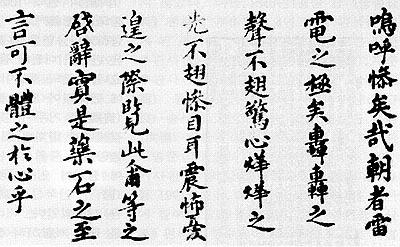
万历二十三年（宣祖二十八年，1595）十一月七日出生于黄海道的海州城。父亲为宣祖大王第五子，定远君李�M。万历三十五年（1607年）封绫阳都正，寻封绫阳君。
如前文所说，朝鲜光海君朝末年，东亚的国际政局出现了极大的动荡。新兴的女真军事力量在对明朝的战争中表现出了惊人的力量。在这种情况下，光海君不得不采取一种圆滑的外交政策，在臣服明朝的同时也向后金示好。这种态度为朝鲜的正统派两班阶级所不容。再加上光海君在治国方面的一些失误，以及宫廷内部不同势力之间的争斗，天启三年（1623）三月十二日，朝鲜发生宫廷政变。西人党的李贵、李适、金自点等人在仁穆王后和新崛起的南人党势力的协助下，召集军队在绫阳君的别墅内会合，打入庆云宫，发动宫廷政变。三月十三日晨，绫阳君李��即位于庆云宫之别堂。是为李朝仁祖。仁祖即位后，光海君的亲信――大北派的李尔瞻、郑仁弘等被赐死，光海君和家人被流放到乔桐岛。仁祖在两班阶级、尤其是儒家学者支持下，采取亲明排金的政策。当时明金对峙，后金要想西进伐明，就要考虑东面朝鲜的行动。对于如何处置朝鲜，后金朝廷内部有两种意见。《李朝实录》记载，“第三子洪太时（皇太极）常劝其父进犯我国；其长子贵永介（代善）则每以四面受敌，仇怨甚多，则大非自保之理，极力主和，务要安全，非爱我也，实自爱也”。努尔哈赤为避免两面作战，对朝鲜采取拉拢的政策，多次派遣使臣赴朝鲜投书，希望朝鲜与明朝脱离关系，与后金结盟。但是朝鲜不为所动，仍然支持明朝，反对后金。
此时，明朝辽东巡抚王化贞标下练兵游击毛文龙率领兵丁二百余人，在朝鲜皮岛建立了牵制后金、联络辽民的海外基地，势力不断壮大。努尔哈赤要求朝鲜断绝与毛文龙的往来，遭到朝鲜严词拒绝。皇太极即位后，曾说“父王不听我计，临终方悔……我气不过就是东江（皮岛），只为山险谷深，前埋后伏，且他奸细甚巧，我的动静言语霎时可知，可恨！可恨！”。为了打破明、蒙、鲜三面包围圈，皇太极公开遣使与辽东巡抚袁崇焕讲和，暗地里则把进攻的矛头从西边转移到了东边，积极准备攻打朝鲜和消灭毛文龙，消灭后顾之忧。同时朝鲜方面因为后金的威胁与日剧增，也在加紧进行战争准备。仁祖二年，命令守御使李曙修筑南汉山城。碧岩大师被任命为修筑工程的总指挥，动员八道守军轮流服劳役，两年以后即仁祖四年，全长9公里、有四将台、四大门、十六暗门的南汉山城便竣工了。
1627年丁卯（明天启七年，朝鲜仁祖五年，后金天聪元年）正月初八，皇太极以朝鲜“助南朝兵马侵伐我国”、“窝藏毛文龙”、“招我逃民偷我地方”、“先汗归天……无一人吊贺”四项罪名，对朝鲜宣战。他命阿敏、济尔哈朗、岳托等人率军东征，阿敏率领三万余骑渡过鸭绿江，攻占义州，济尔哈朗则率领大军进攻毛文龙驻扎的铁山。毛文龙退居皮岛。阿敏认为皮岛隔海相望，没有水师，无法进攻，而义州则被后金轻易攻取，说明朝鲜防御力量很弱，足以取胜。因此，后金把进攻目标转为朝。阿敏率领大军南下，一面放兵四掠，一面以待朝鲜请和。仁祖得到后金大军南下、定州失守的消息，惊恐万状，将后妃送到江华岛避难。阿敏部将乘胜前进，先后攻占安州、平壤，至中和乃停止前进，驻营安扎。此时仁祖也已逃往江华岛，并命使臣到后金营中投书求和。双方经过一个多月的谈判，朝鲜迫于后金的军事压力，基本上答应了后金提出的入质纳贡、去明年号、结盟宣、约为兄弟之国等要求，惟有永绝明朝一条不同意。最后阿敏让步，向朝鲜表示“不必强要”。三月初三，仁祖率领群臣和后金代表南木太等八大臣在江华岛焚书盟誓。虽然阿敏在盟誓上署名了，但是对朝鲜誓文不满意，便令八旗将士分兵掳掠三日，使朝鲜京畿道海边一带“尽成空壤”。随后后金撤军到平壤，奉皇太极命令不再后撤，扬言“大同江以西，不可复还”，又逼迫朝鲜签订了平壤誓约，在中江、会宁开市、索还后金逃人、追增贡物。这次入侵，在朝鲜历史上被称为“丁卯胡乱”或者“丁卯虏乱”。
丁卯胡乱之后，后金和朝鲜的兄弟关系并不和睦。后金军一退，朝鲜马上向明朝“疏奏被兵情节”。崇祯帝在答诏中对朝鲜被迫与后金媾和的行为表示谅解，同时表彰朝鲜“君臣大义，皎然日星”。1629年，袁崇焕诱杀桀骜不驯的毛文龙，为朝鲜除去一害，朝鲜致书袁崇焕表示感谢。而在与后金的交往中，朝鲜多次表现出厌恶、不情愿的情绪。边境开市，被朝鲜以边地残破、百姓乏食为由一再拖延，定期交纳的贡物，朝鲜也找一切机会削减其数额。明朝孔有德自山东叛逃后金，皇太极命朝鲜助以粮饷，朝鲜非但拒绝，而且还帮助明朝追杀。皇太极一度对明朝采取和平攻势，要朝鲜从中调停，朝鲜看出后金求和之意不诚，加以辞拒双方关系日益僵化，终于酿成了又一场战争。
1636年丙子（明崇祯九年，朝鲜仁祖十四年，后金崇德元年），皇太极正式由汗改称皇帝，改国号大清，族名满洲。他事先将此事通报朝鲜，希望朝鲜参与劝进。朝鲜闻讯大哗，积累近10年的憎恶、羞辱情绪一并迸发。朝鲜臣僚纷纷痛切陈词，“使彼虏得知我国之所秉守，不可以干纪乱常之事有所犯焉。则虽以国毙，可以有辞于天下后世也”。在一片慷慨激昂的气氛下，仁祖拒不接见后金使团，不接受其来书。后金使团愤然离开汉城，沿途百姓“观者塞路，顽童或掷瓦砾以辱之”。该年四月，皇太极在沈阳正式举行称帝大典，朝鲜使臣罗德宪、李廓拒不下拜。皇太极非常气愤，认为这是朝鲜国王有意构怨，决定举兵再征朝鲜。该年十二月二日，皇太极亲自统帅十万大军亲征朝鲜。清军渡江后，扬野战之长，舍坚城而不攻，长驱而南，仅仅十二天便抵达王京城下。京畿之内“上下惶惶，罔知所为，都城士大夫，扶老携幼，哭声载路”。仁祖再次将王妃、王子和大臣妻子送往江华岛避难，自己则率领文武百官退守南汉山城等待各路勤王军的到来，同时派出崔鸣吉等人赴清营谈判，拖延时间。朝鲜请和书中写道“朝鲜国王谨上言于大清宽温仁圣皇帝：小邦获戾大国，自速兵祸，栖身孤城，危迫朝夕……如念蒙丁卯誓天之约，恤小邦生灵之命，容令小邦改图自新，则小邦之洗心从事，自今始矣。必欲穷兵，小邦理穷势极，以死自期而已”云云。皇太极见朝鲜君臣求和之切，毫无斗志，乃对其迫降，下令清军包围南汉山城，伐木列栅，绕城驻守，山城内粮草断绝，不得不杀马充饥。各路勤王军队也被清军击败，朝鲜君臣只有坐困孤城。仁祖曾经爬到南汉山城的南门，看到城下清军黑压压一片，不禁长叹。清军在望月峰上升白旗书招降二字，又致书仁祖，令其出城投降。仁祖则复书“重围未解，帝怒方盛”，所以不能出城请降，“古人有城上拜天子者，盖以礼有不可废，而兵威亦可怕也……”。见朝鲜方面还在纠缠于出城投降的细节，不耐烦的皇太极下令用火炮攻城，同时清军又攻占了江华岛，俘虏王妃、王子、宗室76人，消息传来，见大势已去，仁祖只好求和。1637年正月三十日，仁祖率领群臣出南汉山城，徒步前往汉江东岸的三田浦清营拜见皇太极，伏地请罪。皇太极降旨赦之。双方筑坛盟誓，朝鲜去明年号，缴纳明朝所赐诰命敕印，奉清朝正朔，定时贡献，并送质子二人。此外，朝鲜朝廷中主战最坚决的洪翼汉、尹集、吴达济三人被清军索要，在沈阳就义，号称“三学士”。此役为朝鲜历史上著名的“丙子虏乱”。清朝班师途中顺势攻陷皮岛，拔除了明朝在辽东沿海的最后一颗钉子。
丙子虏乱之后，朝鲜成为清朝的附属国。世子李�艹ぞ由蜓簦�另外一质子则由凤林大君和麟坪大君轮流担任。同时朝鲜还要岁贡黄金百两、白银千两、白苎布200匹、各色绵细2000匹、各色细麻布400匹、各色细布万匹、米万包等等。具有高度发达的儒家文明、以“小中华”自居的朝鲜沦为落后的山林狩猎民族建立起来清朝的藩属国，在当时的朝鲜是令君臣黎民都痛心疾首的事情，丙子虏乱对朝鲜社会、文化的冲击非常大。国王和两班的权威一落千丈。清朝的征索也加重了朝鲜的负担。经济掠夺、政治欺压、文化差异，使得终朝鲜之世，思明反清的情绪一直都是社会思潮的主流。
丙子虏乱之后，李朝开始了社会恢复时期。在战争中遭到破坏的汉城宫室和城防建筑得到了修复。在最主要的粮食产地，南方的全罗、庆尚、忠清三道（三南），实行了新的田税法。同时允许人们纳粮赎罪。国防方面，以海防（防日）和北防（防清）为重点，设立了总戍厅和守御厅。政治方面，以金自点为首的洛党开始得势，朝鲜又陷入无休无止的党争之中。
仁祖二十七年（1649年）五月八日，李��这位经历曲折的朝鲜国王去世于昌德宫之大造殿，在位二十七年，春秋五十五。清朝赐谥为庄穆，但是朝鲜并不把清朝当作真正的宗主国，因此终李朝之世，此谥号以及清朝赐予李朝各国王的谥号，都不为朝鲜所用。仁祖初葬于坡州北云川里，后在英祖年间移葬交河长陵
王妃
明德贞顺仁烈王后韩氏 （籍清州）
万历二十二年（宣祖二十七年，1594） 七月朔日生于原州，万历三十八年（1610年）行嘉礼，初封清城县夫人，天启三年册封王妃。崇祯八年（仁祖十三年，1635）
十二月九日去世于昌庆宫之丽晖堂，终年四十二。初葬坡州云川里，后移葬长陵
继妃
慈懿恭慎徽献康仁贞肃温惠庄烈王后赵氏 （籍杨州）
天启四年（仁祖二年，1624）十一月七日生于稷山，崇祯十一年（1638年）册封王妃，行嘉礼于于义洞本宫 （孝宗潜邸） 。肃宗十四年（1694年）八月二十六日去世于昌庆宫之内班院，终年六十五。葬杨州徽陵
子女
长子 昭显世子 李�� 万历四十年（1612）正月四日生，天启乙丑册封王世子，甲戌明朝册封赐诰命冕服。丁丑二月入沈阳为质，顺治二年（1645）二月归国，四月二十六日暴毙于宫中，年三十四。
次子 孝宗大王 李�B
三子 麟坪大君 李�F 出继绫昌大君李�缥�后。其五世孙李秉源之次子过继给庄献世子之子恩僖君李�G为后，即南延君李球，李球之孙即为高宗李熙。
四子 龙城大君 李滚（以上仁烈王后所生）
庶长子 崇善君 李澄
庶二子 乐善君 李��
庶长女 孝明翁主（以上废赵贵人出）
附：麟坪大君世系
一世 麟坪大君 忠敬公 李�F：
长子 福宁君 李��
次子 福昌君 李�E
三子 福善君 李��
四子 福平君 李?
长女
次女
二世 福宁君 李�耄�
长子 阳原君 李焕
次子 义原君 李�e
长女
次女
三女
四女
五女
六女
三世 义原君 李�e：
长子 安兴君 李��
次子 安溪君 李墀
庶女
四世 安兴君 李�牵�
长子 李镇翼 进士 赠左赞成
庶子 李镇台
长女
五世 李镇翼：
子 李秉源 进士 赠领议政
李秉源之子李球即南延君，出继恩信君/延龄君之后。
孝宗 宣文章武神圣显仁明义正德大王 李�B
李�B（1619―1659），字静渊，号竹梧，潜邸时所称
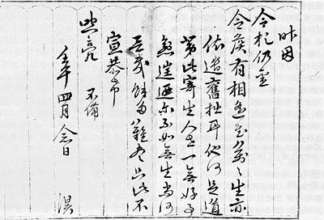
万历四十七年（光海十一年，1619）五月二十二日生于汉城庆幸坊本宫（仁祖潜邸）。为仁祖大王次子。天启六年（仁祖四年，1626），七岁的李�B被封为凤林大君。
1636年的“丙子虏乱”之后，李�B和哥哥昭显世子李�� 、弟弟麟坪大君李�F都被清军掳到沈阳，当了很久的人质。清朝入主关内之后，1644年11月9日，清朝摄政王多尔衮在北京紫禁城武英殿召见作为人质的昭显世子和凤林大君，说“未得北京以前，两国不无疑阻。今则大事已定，彼此一以诚信相孚。且世子以东国储君，不可久居于此，今宜永还本国。凤林大君则姑留与麟坪大君相替往来……”。同时，清朝还宣布减少朝鲜的岁贡币物。
1645年3月，久居满清做人质的昭显世子返回汉城，随行清使勒令朝鲜仁祖李��出城迎接。父迎子，于儒教礼法不合，且有承认清朝敕使代表天子身份的意思，所以忠于明朝的朝鲜两班朝臣士大夫对此心生忌恨。5月21日，昭显世子暴毙于昌德宫中，其死因，有史料认为系被宫人在饵饼中下毒。李��讳言此事，怕多尔衮深究，上报“病亡”。6月7日，被多尔衮释放的凤林大君回到汉城。昭显世子在清廷为质近十年，历尽艰险，亲眼目睹了明亡清兴这段波澜壮阔的历史，积累了处理朝清关系的丰富经验。多尔衮对其逝世“深为惊悼”。虽对其暴毙觉得可疑，但是在朝鲜使臣众口一词的“确系病殪”的说辞下，也不得不信。同年11月14日，清朝册封李�B为朝鲜世子。1649年己丑五月十三日，仁祖大王去世，李�B即位于昌德宫之仁政门。
送还质子，减少岁贡，本是清朝为缓和两国关系而为，但是经过1627年和1636年的两次战争，朝鲜对清朝产生了很深的民族仇恨。在朝鲜一方，明朝灭亡本是调整对清朝外交政策的良机，但是，反清份子利用朝鲜民族对满洲的仇恨心理，推行名分主义的外交，延缓了两国关系的改善。
当时的李朝上下皆视清朝为犬羊夷狄，私下称清帝为“胡皇”，称清使为“虏使”。除对清朝的公文贺表之外，一切内部公文，包括王陵、宗庙、文庙祭享祝文，仍用崇祯年号。《仁祖庄穆大王实录》，在明亡前用崇祯年号，在明亡后用干支纪年和国王在位年号。在仁祖之后的历代朝鲜国王《实录》，只书干支纪年和国王在位纪年。记载朝鲜李朝宗室谱系的《�v源系谱》中所载的李�B即位年份，即为“崇祯后乙酉”。至于私人著述，直到清末，仍有人书写崇祯年号，以至竟然有“崇祯后二百六十五年”的纪年。
当时朝鲜君臣认为，“我朝三百年来，服事大明，其情其义，固不暇言。而神宗皇帝（明神宗万历皇帝朱翊钧）再造之恩，自开辟以来，亦未闻于载籍者。宣祖大王所谓义则君臣，恩犹父子，实是真诚痛切语也”。李朝孝宗则以光复大明天下为己任，倡议北伐。他对大臣说：“群臣皆欲予勿治兵，而予固不听者，天时人事，不知何日是好机会来时。故欲养精兵十万，爱恤如子，皆为敢死之卒，然后待其有衅，出其不意，直抵关外，则中原义士豪杰，岂无响应者！”。对大臣“万一蹉跎，有覆亡之祸，则奈何”的担心，他说：“以大志举大事，岂可保其万全也。大义则明，则覆亡何愧，益有光举于天下万世也。且天意有在，予以为似无覆亡之虞也”。
为了北伐，孝宗首先采取措施，扩军备战。驻汉城的都城御营厅军由7000人增加到21000人。禁军由600名增加到1000名，全部改编为骑兵。御营厅增加了大炮攻坚部队，还计划将守卫汉城的训练都监军增加10000名，御营厅军增加20000名。由于财政困难，未能实现。（韩国姜万吉《韩国近代史》）与此同时，孝宗时代，加快了宣祖时代出现的大同法的推行。所谓大同法，是指在朝鲜中期以后将贡物统一为米谷的纳税制度，客观上加快了朝鲜国内贸易的兴起和商品经济的发展。孝宗时的宰相金育大力主张推行大同法，对土地征收附加税。此法的实施证明对国家的岁入和对农民的境遇都极为有利。这样一个结果对孝宗特别宝贵，因为他的目的是要加强军队和增加国家收入以反对清朝。作为又一项增加收入的措施，他颁布一道命令，所有男子，甚至和尚，都要纳税以换取免服兵役。
李朝君臣确信“胡人无百年之运”的儒家格言，将地震、彗星等自然灾害视为清朝灭亡的征兆，对南明政权、吴三桂和三藩分裂势力、台湾郑成功、准噶尔蒙古等反清势力寄以厚望，准备派使臣渡海联络，策划夹击清朝。台湾郑氏多次请日本联合出师伐清复明，朝鲜对日郑联合乐观其成，甚至建议“假道朝鲜，出送援兵”（《仁祖大王实录》二十四年十二月甲午）。1650年，李�B向清廷奏报“日本近以密书示通事，情形可畏，请筑城训练为守御计”，企图以防御日本为由扩军备战。清朝警觉到朝、日、南明联手组成军事同盟的危险，于是派遣密使前往朝鲜核实情况。结果查明朝鲜与日本素和好，奏折不实，顺治皇帝下诏斥责朝鲜国王，罢其用事大臣。这就是朝鲜历史上有名的“六使诘责”事件。
由于朝鲜财政困难，军备薄弱，北伐大计难以实施。而且由于新兴的清朝连续有顺治、康熙两位励精图治的皇帝，不仅巩固了全国的统一，而且为中国社会经济文化的全面繁荣奠定了基础。朝鲜反清派期望的汉民族武装反抗、满清统治土崩瓦解局面一直没有实现。1683年，清朝统一台湾，南明残存势力灭亡，影响中、朝、日关系的不确定因素消失。作为实际行动纲领的朝鲜北伐计划，寿终正寝。朝鲜没有介入中国内战，也没有铤而走险联合日本跨过鸭绿江入侵辽沈，冒犯正处于全面上升和旺盛时期的新兴满洲军事强权。这是朝鲜的大幸，否则后果将不堪设想。
孝宗的北伐计划虽没有成为事实，但是加重了朝鲜的财政负担，延缓了中朝关系改善的步伐。朝鲜的北伐论者不想肯定中国在满清统治下的文化和经济先进性，以后还几乎全面封锁了对中国文化的引进。
在孝宗年间，清朝还在1654年（顺治十一，孝宗五）和1658年（顺治十五，孝宗九）两次要求朝鲜出兵，协助清军在东北作战，扫荡入侵黑龙江流域的沙俄侵略者。1654年5月，朝鲜调发鸟铳手100名、领队1名、翻译2名、军官、旗鼓手火丁48名，前往宁古塔与清军会合，6月11日在松花江下游与斯捷潘诺夫部俄军相遇。清、鲜联军750余人在江边高地集结，俄军本想迎战，但是东风忽起，完全使用风帆动力的俄国军舰不得不撤退，朝鲜军枪手精确射击，俄军多人中弹。这支朝鲜部队回国后受到朝鲜兵曹（相当于兵部）的褒奖。1658年，清军集结兵力，准备围歼入侵俄军，朝鲜军第二次应战，计有鸟铳手200名，火兵20名，将官5名，翻译2名，随卒38名，刷马驱人39名，合计304人，于6月2日从朝鲜边境军事重镇会宁出发，9日至宁古塔与清军会师，乘坐战船52艘前往松花江下游。7月10日，清鲜联军在松花江口与俄军交战。俄军500人，其中180人临阵逃脱，270人被击毙或俘虏，俄军首领斯捷潘诺夫被打死。朝鲜军战功卓著，牺牲8人，伤25人。战斗结束后，联军在松花江下游继续警戒两个月，9月20日朝鲜军归国。
1659年己亥五月四日，孝宗大王去世于昌德宫之大造殿，在位十年，终年四十一。清朝赐谥号为忠宣。朝鲜自仁祖之后不用中国所赐谥号，自上谥号为宣文章武神圣显仁，英祖十六年加上谥号明义正德。初葬杨州，太祖健元陵西，显宗十四年十月七日移葬于骊州宁陵。
王妃
孝肃敬烈明献仁宣王后张氏（籍德水）
万历四十六年（光海十年）十二月二十五日生于安山。崇祯四年（仁祖九年）行嘉礼于梨岘别宫。初封丰安府夫人，1644年乙酉册封世子嫔，1649年己丑进封王妃。1674年甲寅（显宗十五年）二月二十四日去世于庆熙宫之会祥殿，终年五十七。葬宁陵。
子女
长子 显宗大王 李��
长女 淑慎公主
二女 淑安公主
三女 淑明公主
四女 淑徽公主
五女 淑静公主
六女 淑敬公主
庶女 淑宁翁主（安嫔李氏出）
显宗 昭休衍庆敦德绥成纯文肃武敬仁彰孝大王 李��
李�ィ�1641―1674），字景真
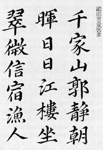
崇祯十四年 （仁祖十九年，1641）二月四日出生于沈阳的朝鲜世子馆。1644年甲申，入主中原的清朝释放朝鲜质子归国，年幼的李�サ靡运娓盖追锪执缶�一同回到祖国。1649年己丑，八岁的李�ケ徊岱馕�王世孙，1651年辛卯（孝宗二年）进封王世子。1659年己亥五月九日，李�ゼ次挥诓�德宫的仁政门。李�ピ谖黄诩洌�朝鲜制订了禁止同宗同姓婚姻的《相避法》，发明了铜活字印刷技术。此时朝鲜党争中的西人老论派（元老派）和少论派（少壮派）登场，出现了宋时烈、尹镛等儒学大家。1674年甲寅八月十八日，李�トナ烙诓�德宫之斋殿（养心台）。在位十五年，终年三十四岁。葬在杨州崇陵。清朝赐谥为庄恪。
王妃
显烈禧仁贞献文德明圣王后金氏（籍清风），崇祯十五年（仁祖二十年，1642）五月十七日生，1651年辛卯（孝宗二年）册封世子嫔，行嘉礼于于义洞本宫（孝宗潜邸）。1659年己亥进封王妃。1683年癸亥（肃宗九年）十二月五日去世于昌庆宫储承殿，终年四十二。葬崇陵。
子女
长子 肃宗大王 李�l
长女 明善公主
次女 明惠公主
三女 明安公主
肃宗 显义光伦睿圣英烈裕谟永运洪仁峻德配天合道启休笃庆正中协极神毅大勋章文宪武敬明元孝大王 李�l
李�l（1661―1720），字明普
1661年辛丑（显宗二年）八月十五日生于庆熙宫之会祥殿。1667年丁未册封王世子。1674年甲寅八月二十三日即位于昌德宫之仁政门。
肃宗是三代单传的独子，但他年过30，却尚未得子。第二位王妃仁显王后闵氏也很焦虑，她不顾肃宗的反对，挑选了译官张炫的侄女张氏进入后宫。张氏此后产下一子，便是景宗，随即被升格为禧嫔。但是她并不满足于此，又经过种种策划，不仅使王妃被逐，更使其被逼致死。似乎人类永不满足的欲望，能够让人变得无比残忍。为人懦弱的肃宗，在禧嫔的威慑下，不禁成了惧内之人。周边重臣，也都逐渐为禧嫔势力所制，国王已成傀儡――暴君和傀儡之间的区别，在于或控制臣下，或被臣下所制――成为后者的国王，每日只得在忧郁中度过。一天，他正无精打采的走向寝殿，却听得一间小屋中传来至痛的啜泣声。肃宗不由得奇怪，进门一看，却大吃一惊，屋中整齐的摆放着祭饭，一名年少的侍女（侍奉宫女之人）身着素装，正面向灵牌痛哭，灵牌上所奠的，正是仁显王后。虽然仁显王后是为肃宗才牺牲自身，理应被人祭拜，但惮于禧嫔之威，无人敢提祭奠之事。若是被禧嫔知道，必然会被定为谋逆，随即斩首。肃宗自然奇怪，在此种境地下，此人何敢以死相拼，祭奠仁显王后？
“你是何人，为何胆敢祭奠仁显王后牌位？”
侍女听到国王的声音，惊得慌忙跪伏在地：“殿下，奴婢本是仁显王后身边的侍奉之人，今天乃是王后诞辰，奴婢不能忘记王后恩典，私下祭奠，请殿下处以死罪。”闻听此言，肃宗深受震动。在旁人均明哲保身时，这女子却冒死祭祀从前主人，其善可鉴。在同病相怜的感动之下，或者说同情变成了喜爱，肃宗将这侍女唤入寝殿，自此常常与之同眠。此事自然没有逃过禧嫔的眼线，但是，禧嫔起初只觉得这女子有些风情而已，并未有什么举动，直到得知这侍女怀孕，才大为震惊。便开始加害于她。那侍女对此已经有所警觉，又深感自己所怀的是肃宗骨肉，不能有半点差错。便极力应对，躲过了禧嫔一个个毒计，直至临盆将至，禧嫔气急败坏，将侍女捕来，让其跪于地上，再加刑罚，并以大水瓮扣盖其身，意图将其害死。肃宗听闻后大惊，赶至现场将瓮除去，把侍女抱回寝所，所幸王子安产，那侍女即是后来的毓祥宫淑嫔崔氏，王子便是英祖王。封建李朝家族的权力之争，就是如此的残忍丑恶。
朝鲜党争自燕山君时代以来延续了上百年，非常激烈。其时西人老论派和南人派相对立，势同水火。南人因依附张禧嫔，拥护肃宗废正妃闵氏、立张禧嫔为正妃而得重用。持反对态度的西人派在金春泽等人的带领下发起“闵妃复位运动”而受到镇压（甲戌狱事）。但是数年之后，肃宗后悔贸然废后，在1701年11月以“诅咒国王”、“巫蛊后宫”的罪名将张禧嫔赐死，恢复了仁显王后的后位。肃宗死后，张禧嫔之子景宗供奉张禧嫔灵位于后苑的别殿（后来七宫中的大嫔宫）。景宗无子，死后，异母（崔淑嫔）弟延寿君李�T即位，是为李朝的英祖。1725年，英祖大王即位，为了雪母亲之恨，首先便在宫殿近处修建祠堂，命名为毓祥庙，这就是今日的七宫所在。英祖在第二年，也就是乙巳年，对当年支持慈禧嫔的南人派发动了意在雪恨的清洗行动，这就是著名的“乙巳士祸”。在乙巳士祸余波已平的1729年，英祖将毓祥庙升格为毓祥宫。朝鲜历代祭祀国王的庙堂虽然都称为宗庙，但给一介后宫的祭庙加以宫号，的确是破格处置了。张禧嫔一生波折动荡，其人足智多谋，与唐朝的武后、明朝的郑贵妃、万贵妃类似。但是最终因心术不正而引火烧身。现在在韩国，她的故事还被改编成电影、电视和小说，常盛不衰。
肃宗即位后，一直不忘父祖“反清尊明”的遗愿。1704年甲申，明朝灭亡六十周年，肃宗自宜春门诣禁苑坛，以太牢祭祀崇祯皇帝。又命汉城府在昌德宫后苑春塘台设“大报坛”，祭祀明朝神宗皇帝。“大报”出于《礼记》郊特牲，是郊天之义，而兼有报德之意。1749年（乾隆十四年）又以明朝太祖、神宗（万历）、毅宗（崇祯）并享大报坛，并于三帝即位、忌辰日行望拜礼。这种祭祀活动每年进行，直到李朝末年。“尊明义理”在朝鲜仍然盛行，但是孝宗的“北伐论”已经演变成国王增加赋税、广筑城苑、加强禁军兵力的口实，最终无疾而终。
经济方面，肃宗时代加强了大同法的实施，在黄海等道丈量田地，作为以税代赋的依据，开设铸钱局，铸造了“常平通宝”。显宗、肃宗时代，朝鲜的全国人口增加了一倍多。全国人口在1657年为229万人，到1669年增长到501.8万人，这一增长十分显著。汉城的人口在同期从80，572人增长到194，030人。全国人口的增长主要是由于实行了税制改革、农业管理和农业技术改进的缘故。汉城人口增长的原因可以认为是由于贩卖不再作为贡税交纳给政府的货物的商人大量涌入。在全国大多数地方实施大同法之后，政府对地方产品实物的需求由商人予以满足。他们成了满足政府需求的采购代理人。他们获得了垄断特权，为遍布全国的行会树立了样板。政府经营的工厂和制造业的衰落，刺激了工匠和技师去建立私人工厂和开办商店销售自己生产的产品，并组织成行会。在各道的市镇，每五天举行一次集市，作为生产者和汉城商人之间的沟能渠道。汉城的领有执照的地方产品供应商通过他们的利润丰厚而又有保障的生意，逐渐积累了资本。由此产生了一种新的财富观念，即商业财富观念，这种财富不再是由土地和奴婢组成，而是由用于以货币进行曲大宗交易的商品组成。随着交易的兴旺和货币的流通，商业资本得到了一个发展的基础。然而，这些旨在维护儒教两班社会的努力却导致了这种社会的削弱。
政治方面，在乙巳士祸之后，南人派清南、浊南势力受到打击，西人派得势。新兴的宋时烈、尹镛和朴泰辅等知名学者抨击被偶像化了的朱熹体系。保守派两班把他们斥之为异端，但是，一个致力于批判传统秩序的新学派的兴起时机已经成熟。这新一代的学者认为，人民的生活状况比新儒教政府机构的士大夫所极为珍视的合法性和礼制问题更加重要，“若农民民不聊生，任何国家都无法生存，而即令没有君主，人民却能照样兴旺发达。”这就是构成改革派――实学――基础的新潮思想。柳馨远在他的《蟠溪随录》（社会改革论文）中提出了下列措施：（1）建立一种利益能由大家公平分享的土地制度；（2）实行推荐制，代替科举制；（3）为所有人确立均等机会；（4）改革政府机构；（5）采用新学。他的建议没有为官方所接受，但是他的改革派思想却成了实学的主流。他把重点放在农业上，因为他所建议的改革能否成功，取新局面于农业问题的解决。与官府无关的学者育感需要从事实学。官府系统则一心进行内部争权斗争，同时各派在对新儒教礼制的不同解释上发生冲突。17世纪后半期，西人党内部各派之间的争取斗争变得激烈起来，又有一些派别分裂。这种派别倾轧与农民生活和国家利益全然无关。西人少论派中的多数开始对农民的福利表现出关心，由于两班中的许多人从事农耕，甚至无力保持奴婢，所以农民的境况与他们自己的境况比较接近。改革派正是在这种社会经济变化过程中勇敢地政正视社会的种种要求的。商业活动随着政府批准的供应商行会的发展继续发展。这种活动在全国扩张，他们的交易占政府总收入的60%。在这段时期里，政府收入不断增长同时一些富有的农民把自己的身份转为两班身份。人口也同步增长，在1669至1717年这48年里增加了近200万。
后宫波折动荡的肃宗大王在1720年庚子六月八日去世于庆熙宫隆福殿。在位四十六年，终年六十。英祖五年定世室。英祖二十九年追上尊号裕谟永运洪仁峻德，五十二年追上尊号配天合道启休笃庆，高宗二十七年追上尊号正中协极神毅大勋。清朝赐谥僖顺。葬高阳明陵。
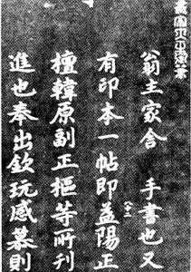 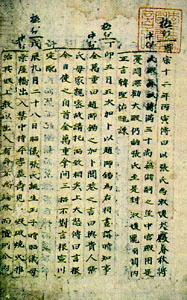
王妃
光烈宣穆惠圣纯懿孝庄明显仁敬王后 金氏（籍光州）
1661年辛丑（显宗二年）九月三日生于汉城好贤坊。辛亥册封世子嫔，行嘉礼于於义洞本宫（孝宗潜邸）。1674年甲寅进封王妃。1680年庚申（肃宗六年）十月二十六日去世于庆熙宫之会祥殿，终年二十。葬高阳翼陵。
继妃
孝敬淑圣庄纯元化懿烈贞穆仁显王后 闵氏（籍骊兴）
1667年丁未（显宗八年）四月二十三日丁生于汉城盘松坊，1681年辛酉册封王妃，行嘉礼于於义洞本宫（孝宗潜邸）。1701年辛巳（肃宗二十七年）八月十四日去世于昌庆宫之景春殿，终年三十五。葬高阳明陵。
继妃
惠顺慈敬献烈光宣显翼康圣贞德寿昌永福隆化徽靖正运定懿章穆仁元王后 金氏（籍庆州）
1687年丁卯（肃宗十三年）九月二十九日生于汉城顺化坊。1702年壬午册封王妃，行嘉礼于於义洞本宫（孝宗潜邸）。1757年丁丑（英祖三十三年）三月二十六日去世于昌德宫之永慕堂，终年七十一。葬高阳明陵。
子女
庶子
长子 景宗大王 李昀（玉山府大嫔张氏生）
二子 盛寿君 李■ （玉山府大嫔张氏出，早夭）
三子 永寿君 李■ （毓祥宫和敬徽德安纯绥福淑嫔崔氏出，早夭）
四子 延�i君 李�T （英祖大王，毓祥宫和敬徽德安纯绥福淑嫔崔氏生）
五子 李■（毓祥宫和敬徽德安纯绥福淑嫔崔氏出，未封早夭）
六子 延龄君 李�R 无子孙，以侄庄献世子之子、从孙恩信君李�G为后，李�G以继子南延君李球为后，李球即兴宣君（大院君）李�g应的父亲，高宗李熙的祖父。
嫡女
长女 （仁敬王后生，未封早卒）
次女 （仁敬王后生，未封早卒）
景宗 德文翼武纯仁宣孝大王 李昀
李昀（1688―1724）字辉瑞
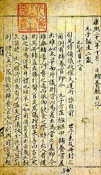
1688年戊辰 （肃宗十四年） 十月二十八日生于昌庆宫就善堂，母亲是朝鲜历史上有名的权术女人张禧嫔，父亲肃宗是三代单传，得知李昀出生的时候自然是欣慰异常。1690年庚午，三岁的李昀被册封王世子，1695年乙亥入学，行冠礼。1696年，朝鲜奏请清朝，请立李昀为世子。清朝礼部沿用《大清会典》“王与妃年五十无嫡子，始立庶长子为王世子”而拒绝奏请。朝鲜使臣以外国与内服不同，世子虽为庶出，但是诞生后即报清朝，且告宗庙，定以嫡长子（估计是禧嫔的手段），由王妃抚养，无异嫡出，臣民属望已久为由，再次请封。1697年丁酉，康熙皇帝乃允朝鲜所请，册封李昀为王世子。是年肃宗患病倦政，李昀作为王世子，承命代理摄政。1720年庚子六月十三日，肃宗去世，李昀即位于庆熙宫崇政门，是为景宗。大概是因为生母作恶多端的缘故吧，景宗自幼体弱，无子，不得不把弟弟李�T封为王位继承人。景宗在位年数不长，但是朝中也不免权贵党争。景宗年间，朝鲜人首次发现了日本海中的独岛（日方称竹岛）。景宗于1724年甲辰八月二十五日去世于昌庆宫环翠亭。在位四年，终年三十。无嗣。葬杨州懿陵。清朝赐谥恪恭。
王妃
恭孝定穆端懿王后 沈氏（籍青松）
1686年丙寅（肃宗十二年）五月二十一日生于汉城好贤坊。1696年丙子册封世子嫔，行嘉礼于於义洞本宫（孝宗潜邸）。1718年戊戌（肃宗四十四年）二月七日去世于昌德宫之长春轩，终年三十三。葬杨州惠陵。
继妃
敬纯孝仁惠穆宣懿王后 鱼氏（籍咸从）
1705年乙酉（肃宗三十一年）十月二十九日生于汉城崇教坊。1718年戊戌册封世子嫔，行嘉礼于於义洞本宫（孝宗潜邸）。1720年庚子进封王妃。1730年庚戌（英祖六年）六月二十九日去世于庆熙宫之鱼藻堂。终年二十六。葬懿陵。
子女
无子女，无嗣
英祖 至行纯德英谟毅烈章义弘伦光仁敦禧体天建极圣功神化大成广运开泰基永尧明舜哲干健坤宁配命垂统景历洪休中和隆道肃庄彰勋正文宣武熙敬显孝大王
李�T
李�T（1694―1776）字光叔，号养性轩（潜邸时肃宗所赐堂名，因以此为号）
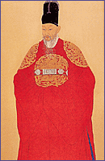
1694年甲戌 (肃宗二十年) 九月十三日生于昌德宫宝庆堂。1699年己卯封为延�i君。因为长兄景宗无子，所以在金昌集、李颐命、李健命、赵泰采等人的拥立下，于1721年辛丑
(景宗元年) 被册封为王世弟，以辅政的身份临朝听政。1724年甲辰，景宗去世，李�T于八月三十日即位于昌德宫仁政门。是为英祖大王。
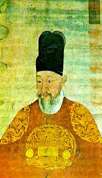
英祖自幼便历经波折动荡，在母腹中便受到张禧嫔的摧残（参见肃宗条），册封、即位前以延�i君、王世弟的身份居于外邸，作为朝政的旁观者，深知派系倾轧对国政的害处，所以他一登基便着手荡平这种争斗。为了恢复昙花一现的普遍兵役税，英祖甚至走出宫廷，征求官吏、文人学士、士兵和农民的意见。为了减轻务农者的负担，英祖将向全国平摊征收的兵役税削减一半，减收部分由渔业税、盐税、船只税和土地附加税来补足。英祖还通过会计制度来整顿国家收支的财政制度。他采取切合实际的政策，允许边远的庆尚道用粮食纳税，交到附近的港口，在山区允许缴纳棉花或现金来代替粮食。通过增加钱币的铸造来鼓励货币流通。英祖还热心地推广用韩文印刷的重要书藉，包括《小学训义》、《小学指南》、《表义录》、《百行录》、《警世问答》等等，并且推广象《农家集成》这类有关农业的书藉，表明他关心改善农民的生活。雨量计、水文计等科学仪器再次大量制造，分发给地方官署，同时广泛地着手进行公共工程，在农村修筑堤堰，在汉城和其他城市广泛建设道路、桥梁，并修筑了平壤中城。英祖提商了平民子女的地位，开辟了庶民社会地位上升的又一个可能性。
英祖采取的政策，旨在坚持儒教治国，发扬世宗大王时代那种开明君王的人道主义的统治，但是却阻挡不住社会变革的潮流。18世纪，朝鲜的国内和国际商业活动量迅速增加，通过经由行会组织扩大的垄断和批发销售，出现了资本积累。许多从事贸易的商人集中在汉城。政府核准的商店即领有执照的贡物供应商与街巷小店主之间的传统分野，被融合到一种垄断和批发体制的结构之中。临时商店的设立原来是为了满足人民在特殊场合（如科举考试、国王出巡和其它全国性大事等）的需求，但是这些店铺在这种场合过去后，仍继续向普通百姓供应食品和杂货。这些店铺是由小店主在临时搭起棚屋里经营的，他们不管怎样都依赖批发商。批发商的价格方针对汉城百姓的生活有着直接影响。手工匠往往成为个体生产者。有些人甚至发展成工厂厂主，取得了销售自己产品的垄断特许权。在一些情况下，仅仅做经营某些商品的批发商比从事物品生产更有得可图。在商人和手工匠中，藉对已获得特许的的商品作少许改进而创立一种新商品来获得特许证，已成为一种风气。特许证确保垄断和受到政府保护。朝鲜所谓的“湾商”垄断了来自京畿道和忠清道的商品，还有一些批发商在全国有着人参销售网。
英祖时期，朝鲜和清朝、日本之间的贸易额迅速增长。其中除了中朝边市贸易的牛、马、盐、铁之外，最重要的是对清朝的人参贸易。人参贸易又称为八包贸易，每包人参为10斤，朝鲜允许到中国的使团―所谓“燕行”人员―每人携带八包。后来因朝鲜边民越境采参伤害中国地方官员，朝鲜政府停止人参出口，使团按每斤人参25两白银计算，可以携带2000两白银去中国购买商品。后来为了防止白银过度外流，又折合成价值2000两白银的朝鲜货物，如皮毛、纸张、海产干货等杂物。高级官员可以携带一个半八包（3000两白银）的货物。由于使团内象译官等低级官员资本短缺，于是私商趁虚而入，或贷款给译官，或直接为使团提供包参和包银，从中国购买商品。他们出售人参和朝鲜其他产品来换取日本的白银、中国的织物、日用杂货、金属品、书籍、药材、染料，还有朝鲜王室所用的药材、珠宝、苏杭绸缎等奢侈品，采购量相当大。一些朝鲜巨商为了追求利润，甚至充当使团的马夫、奴子，随同使节团前往中国。在中朝贸易中，也发生过一些违禁事件。清朝严禁枪炮、军械、牛角、火药、硝石等军火和军火原料出口，对大米、豆麦、杂粮、铜铁、废铁、生丝、马匹、书籍也在禁止出口或限制出口之列。对朝鲜的出口比较宽松，但是也有山海关总兵搜出地图、违禁书籍、牛角和硝磺等禁物的记载。朝鲜方面为了限制白银外流，也采取过一些措施，最著名的是英祖颁布的禁纹令。
英祖在朝鲜历史上是以俭朴著称的国王，即位之初，就关注清鲜贸易对朝鲜国内经济和社会风俗习惯的影响。英祖三年（1727，雍正五年），朝鲜冬至副使郑亨益向英祖进言：“……近来矿银之流入彼（清朝）中，太无限节。所谓矿银，即我国所采之银也。以我有用之货，贸彼无益之物，尽归消融，以启奢侈，此甚可闷”。次年，承旨李重协上疏，“绫缎纱罗，本非我国之产，年年使行，尚方御供所入，营门旗帜所入，及各司别请求贸易之外，若或违禁，施以潜商之律，一以革举国奢靡之风，一以防私商挟带之奸，一以补度支经用之费，行一事而有三利焉”，英祖批曰：“尔言是矣，然上之衮服，下之章服，俱此中出也，难施一切之法矣”。大臣徐命均的奏章则说“以十数万之银，贸得唐物，为费不赀。而奢风渐盛，闾阎尤甚，衣服饮食，耻不若人。严禁此风则好矣。而此专在在上者之导率。圣上服御之俭，无以加勉，而宫中服饰，恐不无奢靡之习，别为申饬，以为化下之本焉”。到了英祖二十二年（1746，乾隆十一），几经酝酿，英祖终于正式发布命令：“奢侈之风，莫若近日。噫！上有好者，下必从焉。岂有不躬行而先饬民者乎？自今年使行为始，上而衮服，下而朝衣，军用外，绫罗贸来者，一切严禁”，正式禁止从中国进口纹缎。与朝鲜使团贸易的北京巨商闻讯大惊失色，“在彼国王诚盛德事，吾属自此无以聊生矣”。但是，在清、鲜两国商人的联合抵制下，禁纹令很快失去效力。中国商人开始织造无纹绸缎出口朝鲜，到了四十年后的正祖年间，禁纹令已经是名存实亡，正祖不得不重申这一命令。
除了中朝贸易之外，朝鲜还作为中日贸易的转口商，用从日本贸易得来的白银到中国购买丝等物，再将中国的丝出口到日本换取白银。朝鲜“贸白丝于清国者，皆入倭馆，则辄得大利。白丝百斤，贸以六十金，而往市倭馆，则价至百六十金，此大利。故白丝虽累万斤，皆能售之”。在英祖时期，开城的商人（松商）在人参批发和出口贸易活动中与汉城的同行（京湾商）展开激烈的竞争，在日本和中国之间进行三方国际贸易。他们从朝鲜寺庙里的生产者那里大量买进纸张（高丽纸），从东部海岸买进海带、海参等干货，从中部和北部山区猎人那里买进水獭、豹、虎等野兽的毛皮，从中国进口白丝、锡，从日本进口红铜、铁器，这些商品都是用来进行这种三方国际贸易的。此外，朝鲜通过琉球向南洋的转口贸易也有发展，从南洋进口药物、香料和珍珠、玳瑁、珊瑚等奢侈品。在琉球王国都城首里城（朝鲜称为海浦）出现了专门航行到朝鲜的琉球贸易船。李重焕在《择里志》一书中，李寅文在画作《取之不竭的江山》中，分别叙述和描绘了贸易船只经常来往于这些边远港口的情景。后朝鲜政府规定造参以松商（开城商人）为主，出口则以京湾商（汉城商人）为主。京湾商不仅如前文所说垄断了国内贸易，而且还代政府收税、经营银钱兑换、经纪海外贸易，大有中国的十三行与粤海关的派势。
朝鲜商人的这种商业垄断和批发活动造成了对银和铜的更大需求，促进了采矿业。倭乱之前在政府严格控制下的矿山交给了私人经营者。在17世纪，朝鲜全境有68个银矿在开采，但是铜矿开采不很发达，因为铜是依靠日本供应的。然而，在18世纪，由于日本德川幕府停止出口铜，而清朝要求大量供应铜，铜矿也发展起来了。物价不断上涨，汉城人民如果不是以这种或那种方式参与了商业活动的话，他们的生活会受到威胁。许多两班和平民不顾自己的身分，也从事某种商业活动。因此，汉城在18世纪作为工商业城市有了长足进展。老百姓对诸如刀、马毛帽、餐桌和铜器等工业品的需求不断增长。对戴马毛帽的限制实际上消失了。
在英祖年间，朝鲜的两班阶级越发走向贫困和没落。两班数目的增加是他们走向贫穷的根由，因为他们持有的土地至少必须在儿子之间平分，而女儿不管出嫁与否，在遗产继承中往往也占一份。财产越来越少的两班所面临的选择是，或者作为自耕农从事农业，或者间接从事获利丰厚的工商业。随着贸易和货币流通的扩大，放高利贷是他们进入的另一个领域。商业和工业是次要职业这种观念需要改变，一些人力陈向清代中国学习的必要性。曾随同韩国使节团去过中国的朴趾源和朴齐家等人亲眼见到眼里商业和制造业发展的情形。他们回到韩国后，建议采取积极政策来发展商业、冶金业、渔业、畜牧业、园艺和采矿业。连非法翻印书藉的活动也商业化了，因为富有的两班竞相出版著名的祖先的文学作品集。这种情况导致刊印受人欢迎的小说和诗歌。人民特别赞赏讽刺和社会批判作品。讲述一个演艺人的女儿的忠贞的《春香传》读者众多，因为书中充满了对官吏的贪婪和势利的讽刺。
在司法方面，英祖废除了压膝、黥刺等肉刑，在宫门前树立了申闻鼓，使庶民的冤情得以闻达朝廷，以便审理申雪。军事方面，在南方庆尚道设立了统营，作为防备日本的水军的指挥和训练机构。
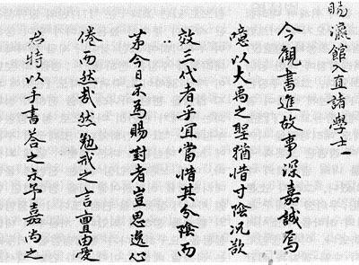
在美国建国的同一年，1776年丙申三月五日，英祖大王去世于庆熙宫集庆堂。在位五十二年，春秋八十三，是李朝最高寿、在位时间最长的国王之一。清朝赐谥为庄顺。葬杨州元陵。
王妃
惠敬庄慎康宣恭翼仁徽昭献元烈端穆章和贞圣王后 徐氏 籍达城
1692年壬申(肃宗十八年)十二月七日生于嘉会坊私第。1704年甲申行嘉礼于松岘坊私第（英祖潜邸）。初封达城郡夫人，1720年辛丑(景宗元年)册封世弟嫔，1724年甲辰进封王妃。1757年丁丑(英祖三十三年)二月十五日去世于昌德宫之观理台。终年六十六。葬弘陵
继妃
睿顺圣哲庄僖惠徽翼烈明宣绥敬光献隆仁正显昭肃靖宪贞纯王后 金氏 籍庆州
1745年乙丑(英祖二十一年)十一月十日生于骊州邑内私第。1759年己卯册封王妃，行嘉礼于於义洞本宫。1805年乙丑(纯祖五年)正月十二日去世于昌德宫景福殿。终年六十一。葬杨州元陵
子女
长子 真宗大王 李�m （延祜宫温僖靖嫔李氏生）
次子 庄献世子 李�� （�ｆ衫钍仙�）
长女 ■（延祜宫温僖靖嫔李氏出，早卒）
二女 和顺翁主 （延祜宫温僖靖嫔李氏出）
三女 和平翁主 （�ｆ衫钍铣觯�
四女 ■（�ｆ衫钍铣觯�早卒）
五女 ■（�ｆ衫钍铣觯�早卒）
六女 ■（�ｆ衫钍铣觯�早卒）
七女 和协翁主 （�ｆ衫钍铣觯�
八女 ■（贵人赵氏出，早卒）
九女 和缓翁主 （�ｆ衫钍铣觯�
十女 和柔翁主 （贵人赵氏出）
十一女 和宁翁主 （废淑仪文氏出）
十二女 和吉翁主 （废淑仪文氏出）
真宗 温良睿明哲文孝章大王 李�m（追封，未即位）
李�m（1719―1728）字圣敬
1719年己亥（肃宗四十五年）二月十五日生于顺化坊彰义宫（英祖潜邸）。1724年甲辰（景宗四年）封敬义君。1725年乙巳（英祖元年）册封王世子。1728年戊申（英祖）四年十一月十六日病死于昌庆宫进修堂，年仅十岁。赐谥为孝章世子。1776年丙申（英祖五十二年）赐号承统世子。正祖即位后，根据英祖的遗命，追尊为王。葬坡州永陵。高宗年间追上帝号为真宗昭皇帝。
王妃
徽贞贤淑孝纯王后 赵氏 籍丰壤
1715年乙未（肃宗四十一年）十二月十四日生于汉城崇教坊私第。1727年丁未（英祖三年）册封世子嫔。1735年乙卯（英祖十一年）赐号贤嫔。1751年辛未（英祖二十七年）十一月十四日去世于昌庆宫建极堂宜春轩，终年三十七岁。赐号承统世子嫔，后追尊为王后。葬永陵。高宗年间追上尊号为孝纯昭皇后。
嗣子 正祖大王 李�{
庄祖 思悼绥德敦庆弘仁景祉章伦隆范基命彰休赞元宪诚启祥显熙庄献世子 李�耍ㄗ贩猓�未即位）
李�耍�1735―1762）字允宽
1735年乙卯（英祖十一年）正月二十一日生于昌庆宫集福轩。1736年丙辰册封王世子。1749年己巳承英祖之命，代理政务。因金氏外戚的老论派和以世子的岳父领议政洪凤汉为首的少论派的党争，刑曹判书尹汲的下人罗景彦密告庄献世子的不轨行为共十条，其中有所谓杀宫女、结交僧尼、私自出京游历京西黄海、平安道等等。1762年壬午（英祖三十八年）闰五月十五日，英祖宣布废世子为庶人，李�吮磺艚�在昌庆宫通明殿的米柜中，于同年闰五月二十一日活活饿死，终年二十八岁。史称“壬午祸变”。世子无辜惨死后，英祖也渐觉其冤，于十二月赐谥“思悼”。正祖即位后谥为庄献世子。高宗在1896年改制称帝，之后按照宗法礼制追尊远祖（太祖）和四世先祖为帝，乃上庙号、帝号为庄祖懿皇帝。初葬杨州拜峰山永佑园，正祖十三年移葬于水原华城的显隆园（隆陵）。
王妃
孝康慈禧贞宣徽穆裕靖献敬惠嫔 洪氏 籍丰山
1735年乙卯（英祖十一年）六月十八日生于汉城盘松坊私第。1744年甲子册封世子嫔。1762年壬午，庄献世子故，英祖赐号惠嫔。正祖即位后，进宫号“惠庆”。高宗年间追封为敬懿王后。1815年乙亥（纯祖十五年）十二月十五日去世于昌庆宫景春殿，终年八十一岁。葬显隆园（隆陵）。高宗称帝后上尊号为献敬懿皇后。
子女
长子 懿昭世孙 李�U
次子 正祖大王 李�{（以上均为惠庆宫洪嫔所生）
三子 恩彦君 李�P（英嫔林氏生）
四子 恩信君 李�G（英嫔林氏生）承延龄君李�R嗣
五子 恩全君 李�`（景嫔朴氏生）
长女 清衍郡主
次女 清�v郡主
三女 清瑾县主
附：
一、恩彦君李�P世系：
妻 全山郡夫人李氏
长子 常溪君 李湛
次子 丰溪君 李瑭
三子 全溪大院君 李��
全溪大院君李��
妻 龙城府大夫人廉氏
长子 怀平君 李明
次子 永平君 李昱
三子 德完君 李�N（哲宗）承纯祖嗣
二、恩信君李�G世系：
妻 南阳郡夫人洪氏
嗣子 南延君 李球（生父为麟坪大君五世孙进士李秉源）
南延君 李球
妻 骊兴郡夫人闵氏
长子 兴宁君 李昌��
次子 兴完君 李����
三子 兴仁君 李最��
四子 兴宣大院君 李�g��
长女
兴宣大院君 李�g��
妻 骊兴府大夫人闵氏
长子 完兴君 李载冕
次子 翼成君 李载晃（高宗）改名李熙，承翼宗嗣
庶子 李载先 获罪赐死
长女
次女
庶女
（壬午祸变一段谢清海惟岳及西塞罗指教）
正祖 文成武烈圣仁庄孝大王 李�{
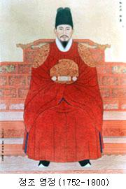
李�{（1752―1800）字亨运，号弘斋
庄献世子第二子。1752年壬申（英祖二十八年，乾隆十七年）九月二十二日生于昌庆宫景春殿。1759年己卯（英祖三十五年，乾隆二十四年）册封王世孙。“己巳祸变”两年之后，1764年甲申（英祖四十年，乾隆二十九年）二月二十日，英祖命李�{承孝章世子之嗣，次年命王世孙代理政务。1776年丙申（乾隆四十一年）三月十日即位于西内庆熙宫之崇政门。
正祖时期，东亚的头号强国――清国正处于乾隆皇帝统治下的全盛时期，可谓是鲜花着锦，烈火烹油。但是朝鲜的一部分士大夫严华夷之辨，以中华正统自居，对清朝的强大和繁荣并不以为然，而且还往往将中国的地震、彗星、水旱虫灾等现象加以夸大，看成是“胡儿无百年之运”的征兆。而且对两国的文化交流也严加限制。英祖时期，朝鲜对清朝的敌视态度稍有缓和，但是仍然视其为窃据华夏的非正统政权。到了正祖时期，随着政局的变化，这种态度一度又有所抬头。正祖十一年（1787，乾隆五十二年），朝鲜备边司规定“挟带杂文书及我国书册者，杖一百，流三千里”、“凡系书籍，涉于左道不经、异端妖诞之说，及杂术方书，一切严防。无论译官及三使臣所属，如有潜贸之事，即其地摘发，烧火状闻。犯者置之重辟”，事实上不止“杂术方书”，而且将中国出版的理学、音韵、诗文、经书、史集、天文、地理、政典、小说等书籍全部列入了禁止携入国境的清单。就是在这个时期，清朝的思想文化界发生了一次大动荡，从明末清初的黄宗羲、顾炎武、王船山等大儒开始，摆脱了朱子学说的桎梏，清算了空谈心性的王阳明心学，而且将批判的锋芒指向了宋学。到乾隆嘉庆两朝，更是出现了标榜实事求是的乾嘉学派，汉学进入鼎盛时期。在这样的大环境下，在朝鲜也出现了柳得恭、李德懋、洪良浩、朴趾源、朴齐家、洪大容等实学家，其中有很多是朝鲜的燕行使团成员，他们在中国游览交际，打破李朝的偏见，客观地反映了中国的政治稳定、经济繁荣、文化昌盛的真相，主张人们学习中国的先进文化思想和生产技术，被称作“北学论”。北学论者朴趾源曾随朝鲜使团参加乾隆皇帝七十寿辰庆典，将在中国的见闻写成了26卷本的《热河日记》。这是一部百科全书式的介绍中国的巨著。他在书中提出向中国学习利用厚生的学问，指出满族统治的中国土地，仍然是产生过汉、唐、宋、明等朝代的华夏大地，生活在这块土地上的人民，仍然是三代以来汉唐宋明遗民，学习中国不等于学习夷狄：“苟使法良而制美，则固将进夷狄而师之。况其规模之广大，心法之精微，制作之宏远，文章之焕赫，犹存汉唐宋明固有之故常哉！”。他主张学习中国的交通、农业和运输技术。北学派介绍的中国新学风、新学派，给朝鲜实学注入了新的营养。朝鲜的实学大家丁若镛也通过这些书籍资料汲取营养，感受中国学术风气的变化。朝鲜实学家们摆脱了已经变成僵死教条的朱子学说的束缚，朝鲜出现了最初的民族意识、民本意识和改革意识。
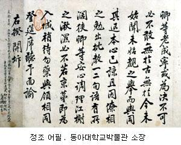
正祖手迹
此外，天主教也在这个时期开始传入朝鲜。在中国的天主教传教士利用朝鲜政府对西洋天文历法和天文仪器感兴趣的机会，同来京的朝鲜使臣交往，传教士的博学多闻、教堂的庄严崇高、基督教教义表述的新奇观念，也随着这些交往传给了朝鲜使臣。正祖八年（1784年），朝鲜使臣李承薰在北京天主教南堂领洗为天主教徒，教名伯多禄（彼得）。他回国之后开始了秘密传教活动，朝鲜的天主教徒组织的地下教会，信徒迅速增加。但是朝鲜的教会属于自发性质，没有经过教会任命的神职人员，教徒为教徒受洗，不符合天主教教义。由于朝鲜严格禁止西洋人入境，所以北京教区主教决定派遣相貌与朝鲜人相同的中国传教士进入朝鲜。1791年12月23日，周文谟教士历尽艰辛，潜入朝鲜国境，随即开始了传教活动，入教信徒有两班显贵，也有卑贱的士卒。朝鲜政府将天主教视为邪教，不断逮捕处决教徒，在得知有中国传教士潜入之后，更是加紧了搜捕，逮捕、拷打教徒。为了保护广大朝鲜教徒的安全，周文谟决定向朝鲜政府自首，于1801年4月19日在汉城英勇就义。此案被称作“辛酉邪狱”，众多教徒和进步思想家如李承薰、丁若镛等人被处刑和流放。朴趾源、朴齐家等与天主教无直接关联的北学论者也被降职、革职。韩国学者认为，周文谟在朝鲜的活动已经超出了宗教的范畴，通过他的活动，十八世纪末的朝鲜社会在了解和吸收欧洲外来文化方面有了很大的进步。
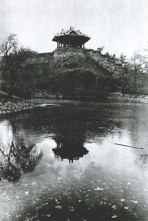
水原华城东北角楼（访花随柳亭）和龙潭
虽然残酷镇压天主教，但是正祖大王还是被公认为李朝五百多年中最有孝心的一位国王之一。尽管被祖父强行过继给10岁就死掉的伯父，但是他对生父庄献世子的惨死始终念念不忘。他将父亲的坟墓从汉城近郊杨州永佑园迁到了京畿道的水原显隆园，并在陵园附近修建了自己的健陵，以长伴生父亡灵。1796年，他还令丁若镛主持在水原兴建一座新都城，这就是有名的华城。
李�{首先把汉城的朝廷官员和兵民富户迁移到水原。在水原八达山划定城址之后，城墙于1794年动工，使用了37万壮丁民夫兵士作为劳力，在两年之后的1796年9月竣工。实学家茶山丁若镛根据当时代表新思潮的实学精神，以当时最新的技术，包括由清朝传入的西洋筑城技术和西洋式起重机械，修建了水原华城。

华城城廓总长5520米，有八达门（南门），长安门（北门），苍龙门（东门），华西门（西门）四个大门，还有通往城外的暗门5个，引水排水的水门2个，保管武器或监视敌人的了望台4座，监视敌人动向的空心墩3座，峰墩1座，炮楼5座，将台2座，角楼4座，炮舍3座，弩台2座。八达山的山麓为华城王宫。
丁若镛在修筑华城的时候，除了西洋技术之外，还采用了经学和儒学思想，易经中的太极、两仪、四象、八卦理论，以及传统的五行方位学说。
 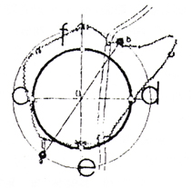 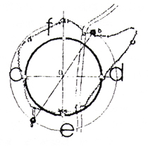
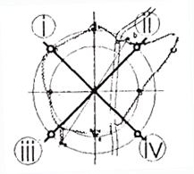 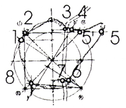
1，西南角楼华阳楼a和东北的龙渊b为两仪
2，四方位线上的八达门e、长安门f、西炮楼c和东炮楼d为四象
3，西北角楼i、东北角楼ii、西南雉iii、东南角楼iv为八卦
华城城墙有以下几个特点：首先，建造城墙时候用了石头和砖瓦，从构造上看，不仅可以防御弓箭和矛剑等冷兵器，而且可以防御枪炮的进攻。这就是表明它已经带有近代城墙的结构。还有一点就是使用材料如石块、砖、木都指定统一规格，并且在施工中使用了西洋式的举重机等机械装置。这些特点都是朝鲜筑城史上的首创。
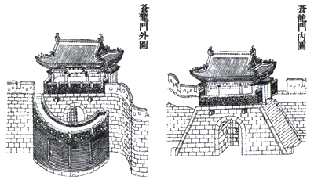
东门――苍龙门
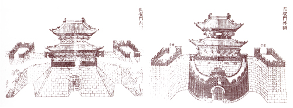
北门――长安门
华城的四座主要城门面阔五间，进深两间，南北城门为重檐结构。城门之外有半圆形的城墙围绕，结构类似瓮城，正中辟门阙，上有雉堞，作为防御之用，但是只有长安门和八达门的壅城完整的保留到现在。它们与中国的瓮城不一样的地方是，在其一侧留有缺口（长安门除外）。朝鲜的城池一般都没有壅城的设置，华城之外唯一的孤例是汉城的东大门――兴仁之门，其壅城也是朝鲜王朝后期所加。华城城门另外一个与众不同的地方是，长安门左右伸出两观，且城内城外均有，作为敌台使用，也有汉阙之意。该门在朝鲜战争时焚毁，战后重建。
在华城的北部，有一座造型优雅的水门――华虹门。该门横跨水原川，有七座水闸，如同虹桥。上有两层楼阁，三间两进，造型别致。水闸外有铁栅栏，防人泅水潜入城中。
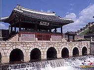
华虹门
华城的城墙之外东北和西北两隅，有两座空心墩。这是类似了望台和碉堡作用的石构堡垒。呈椭圆形，三层，内部为奇特的涡卷式结构。空心墩外部有很多射击口。战时，兵士可以埋伏在其中向外射击。
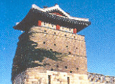
西北空心墩
华城有东西两座将台。西将台上有三层弩台，站在上面可以眺望周围40公里的范围。因此西将台被用为军事指挥所。东将台则是士兵演武操练的地方，又被称为练武台。此外，在城墙东部还有一座峰墩，结构特殊，中间空心，其上有五座小型的烽火台。在这里点燃的狼烟，可以很快地传到汉城的王宫中。
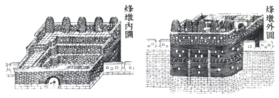 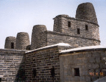
东城墙峰墩
华城作为都城，必然要建设宫室园囿。但是在城池建造完毕之后，因为当时朝政形势限制，正祖改变了迁都的主意，继续以汉城为都城。但是仍然时常前往华城去祭拜父亲的隆陵，经常在祭拜时触景生情，在陵前恸哭伏地。罢建新都后，仅在八达山下修建了行宫和供奉庄祖神主的华宁殿，在城中修建了为庄祖祈福的龙珠寺。正祖去世后，根据他的遗愿，被安葬在其父的陵侧，陵号为健陵。
经过200多年的时间，华城城墙逐渐破落，大部分建筑物完全崩塌，特别是在朝鲜战争之时，华城的城门门楼被入侵韩国的朝鲜人民军损毁。从1975年开始，韩国政府开始了为期3年的华城修复工程（1975-1979）。但这时经过20多年的变化，城市街道已经占据了城墙的一部分，因此没能修复从八达门到东南角楼的491米区域。
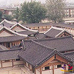 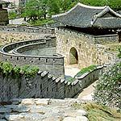
（左）华城行宫 （右）华西门
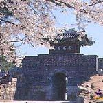 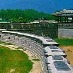
（左）西南暗门 （右）华城城墙
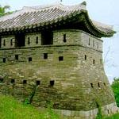 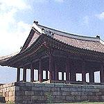
（左）西北角楼 （右）东将台
1997年，水原华城和汉城宗庙被联合国教科文组织列为人类文化遗产。
1800年庚申（嘉庆五年）六月二十八日，正祖大王去世于昌庆宫迎春轩。在位二十四年，终年四十九。葬水原健陵。清朝赐谥恭宣。李�{的庙号原为正宗。1900年，高宗追尊为正祖宣皇帝。
王妃
睿敬慈粹孝懿王后 金氏（籍清风）
行左参赞领议政清原府院君金时默女。癸酉（英祖二十九年）十二月十三日生于嘉会坊私第。壬午册封世孙嫔，行嘉礼于於义洞本宫（孝宗潜邸）。丙申进封王妃。辛巳（纯祖二十一年）三月九日去世于昌庆宫慈庆殿，终年六十九。葬水原健陵。高宗称帝后上尊号为孝懿宣皇后。
子女
长子 文孝世子 （宜嫔成氏生）
次子 纯祖大王 李�a（嘉顺宫显穆绥嫔朴氏生）
长女 ■（宜嫔成氏出）早卒
次女 淑善翁主（嘉顺宫显穆绥嫔朴氏出）
纯祖 渊德显道景仁纯禧体圣凝命钦光锡庆继天配极隆元敦休懿行昭伦熙化峻烈大中至正洪勋哲谟干始泰亨昌运弘基高明博厚刚健粹精启统垂历建功裕范文安武靖英敬成孝大王
李�a
李�a（1790―1834）字公宝，号纯斋
790年庚戌（正祖十四年，乾隆五十五年）六月十八日生于昌庆宫集福轩。1800年庚申（正祖二十四年）册封王世子，七月四日甲申即位于昌德宫之仁政门。
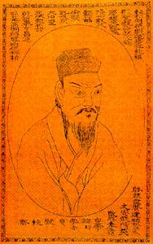
纯祖在位之时，由于前面提到的原因，朝鲜已经从过去的反清尊明转变为心甘情愿地作清朝的藩属，在仍然追尊皇明的同时承认东亚政治现状，不再敌视满清。这时的朝鲜仍然“尊王攘夷”，不过此时的夷已经从“满夷”变成了“洋夷”。
纯祖朝已经是朝鲜王朝最后的一段宁静时光。西方传教士对这个“隐士之国”的描述传到了欧洲，引起了更多的好奇和关注。1788年（道光十二年），一艘英国商船来到忠清道洪州海面，要求呈文进行交易。这是西方国家最早向朝鲜提出的贸易要求。朝鲜恪守“藩臣无外交”的规定，“恪遵法度，正言拒绝”。除了面临西方的贸易要求外，天主教势力也在不断地向朝鲜发展。纯祖即位的次年，朝鲜便发生了有名的“辛酉邪狱”。包括来自中国的传教士周文谟，以及朝鲜教徒李承薰、洪乐敏、金建淳等人被处死，甚至王室宗亲如正祖的弟弟、纯祖的亲叔叔恩彦君李�P（哲宗之祖父）亦受牵连而死。纯祖以及两班士大夫认为对朝鲜威胁最大的，便是被视为邪教的天主教。在这种迫害下，朝鲜天主教被迫向偏远地区发展。
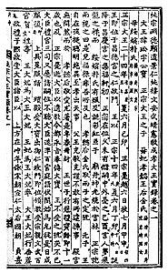
经济方面，纯祖时期正值中国的乾隆嘉庆两朝，中国经济繁荣，购买力旺盛，对朝鲜的高档特产如人参、高丽纸、裘皮、海产干货的需求十分巨大。所以朝鲜和中国的贸易仍然繁荣兴旺。京城、义州和开城的廛贡商人（京商、湾商、松商――义州古称“龙湾”，开城古称“松都”）每年可以给朝鲜关于带来九百八十多万两的巨额白银输入（朝鲜本土少产金银，多依赖外界输入，原先大宗从日本输入，日本锁国后改从清朝输入）。很多近代朝鲜的商业巨子便是从开城和京城的对华贸易商行发展起来的，比如大昌贸易会社、东洋物产、永信社、开城电器会社等等，其前身都是经销清鲜货物贸易的商人。义州等有商业传统的边境城镇也因使团贸易和走私贸易而更加繁荣。由于乾隆时期中国崇尚奢靡、华丽、享乐的风气，所以当时中国的手工业高度发达，各种产品品种丰富，质量极高，朝鲜从宫廷内府到两班贵族，乃至民间百姓，无不依赖中国进口的奢侈品或日常生活用品。据统计，从朝鲜输送到清朝的商品包括马匹；貂、水獭、青鼠、豹等毛皮；海参、鲍鱼、虾、鱼、海带等海产干货；金、银、铜、豆锡、生铁、钢铁等金属；白纸、壮纸、桑皮纸等纸张；人参、胡椒、白矾、干姜等药材；丹木、槐花等染料；梨、苹果、柿、栗等干鲜果品。从清朝输入朝鲜的有牛、羊、骡、驴、等牲畜；剪刀、镊子、针、床炉、釜、皮箱、马鞍、雨伞、木箸、算盘、梳子、纽扣、烟袋、眼镜、瓷器、毛绵纸、斗方纸、火石、火镰、笔、墨、砚、铜壶、锡壶、指南针等日用杂货；各种金属制品如铲、犁、铧、锯等工具；金、银、铜制钱等通货；棉花、棉纱、生丝等纺织原料；各种棉布；各种锦缎绫绸；各种男女成衣、帽子、鞋袜；各种染料；各种食品；各种药材；各种书籍；乃至于进口珠宝玉石、漆器牙雕、家具古董、钗环首饰、自鸣钟、自鸣琴等西洋玩好、猫狗鹦鹉等珍禽异兽。此外还有清朝严禁出口的天文、历法、地理、历史类书籍，以及牛角、火药、硝石、硫磺等军用品，米、豆、麦等谷物，以及生丝铜铁等物，主要是由使团私带和走私进口。这种面临失控的民间贸易引起了朝鲜政府的焦虑，纯祖时期一再三令五申对使用“唐物”（中国进口商品）的禁令，以宫中停用唐物为榜样，这些做法抑制了对丝绸、珠宝等奢侈品的进口。但是其他商品的进口数额仍然没有下降。因为百姓要生活，必须农具、工具和日杂用品。在朝鲜本土制造手艺低下的情况下，只能仰仗从中国进口。
1834年甲午（道光十四年）十一月十三日，纯祖大王去世于庆熙宫之会祥殿。在位三十四年，春秋四十五。清朝赐谥宣恪。初葬交河，哲宗七年移葬广州仁陵。庙号纯宗。高宗称帝后追上四代先王帝号，为纯祖肃皇帝。
王妃
明敬文仁光圣隆禧正烈宣徽英德慈献显伦洪化神运粹穆睿成弘定纯元王后 金氏（籍安东）
领敦宁府事永安府院君赠领议政忠文公金祖淳女。1789年己酉（正祖十三年）五月十五日生于汉城养生坊私第。1802年壬戌册封王妃，行嘉礼于於义洞本宫（孝宗潜邸）。1834年甲午十一月十八日进号王大妃，同月十九日进号大王大妃。1857年丁巳（哲宗八年）八月四日去世于昌德宫之养心合。终年六十九。葬广州仁陵。高宗称帝后上尊号为纯元肃皇后。
子女
长子 孝明世子 李�@（翼宗大王）
嗣子 哲宗大王 李�N
次子 李■[早卒]
长女 明温公主
二女 福温公主
三女 德温公主
庶女 永温翁主
翼宗 体元赞化锡极定命圣宪英哲睿诚渊敬隆德纯功笃休弘庆洪运盛烈宣光浚祥尧钦舜恭禹勤汤正启天建统神勋肃谟干大坤厚广业永祚庄义彰伦行健配宁基泰垂裕熙范昌禧立经亨道成献昭章致中达和继历协纪刚粹景穆峻惠衍祉敦文显武仁懿孝明大王
李�@（追封，未即位）
李�@（1809―1830）字德寅，号敬轩
1809年己巳（纯祖九年，嘉庆十四年）八月九日丁生于昌德宫之大造殿。1812年壬申册封王世子。1827年丁亥承命代理国事。1830年庚寅（纯祖三十年，道光十年）五月六日去世于昌德宫之熙政堂，终年二十二。赐谥孝明，庙号文祜。宪宗即位追尊为王，庙号翼宗。宪宗十四年追上尊号“体元赞化锡极定命”。哲宗四年癸丑追上尊号“圣宪英哲睿诚渊敬”。高宗李熙是旁支承翼宗之嗣，大概是想当个孝顺儿子，于是高宗三年追上尊号“隆德纯功笃休弘庆”，四年追上尊号“洪运盛烈宣光浚祥”，六年追上尊号“尧钦舜恭禹勤汤正”，十二年定世室，追上尊号“启天建统神勋肃谟”。十四年追上尊号“乾大坤厚寅业永祚”，十六年追上尊号“庄义彰伦行健配宁”，二十年追上尊号“基泰垂裕熙范昌禧”，二十四年追上尊号“立经亨道成献昭章”，二十七年追上尊号“致中达和继历协纪”，二十九年追上尊号“刚粹景穆峻惠衍祉”（慷死人之慨，上了乱七八糟那么多的尊号~~~）。大韩帝国时期，高宗追上四代先王帝号，李�@的庙号帝号为文祖翼皇帝。清朝赐谥号为康穆。初葬杨州懿陵，哲宗六年移葬于杨州绥陵。
王妃
孝裕献圣宣敬正仁慈惠弘德纯化文光元成肃烈明粹协天隆穆寿宁禧康显定徽安钦伦洪庆泰运昌福熙祥翼谟睿宪敦章景勋哲范神贞王后赵氏（籍丰壤）
领敦宁府事丰恩府院君赠领议政忠敬公赵万永女。戊辰（纯祖八年）十二月六日生于豆毛坊私第。己卯册封世子嫔，行嘉礼于於义洞本宫（孝宗潜邸）。宪宗即位后尊为王大妃、大王大妃。哲宗死后，为了同其遗孀金氏势力抗衡，赵氏作主迎外邸的李载晃入大统，是为高宗。庚寅（高宗二十七年）四月十七日去世于景福宫之兴福殿。终年八十三。葬杨州绥陵。高宗称帝后上尊号为神贞翼皇后。
子女
长子 王世孙 李奂（宪宗大王）
嗣子 李熙（高宗）
宪宗体健继极中正光大至圣广德弘运章化经文纬武明仁哲孝大王李奂
李奂（1827―1849）字文应，号元轩
 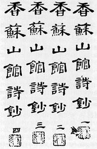 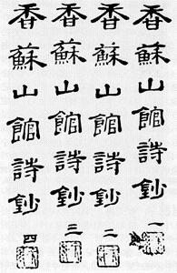
1827年丁亥（纯祖二十七年）七月十八日生于昌庆宫之景春殿。1830年庚寅册封王世孙，1834年甲午十一月十八日行冠礼，即位于庆熙宫之崇政门。由母亲赵大妃垂帘听政。1849年己酉六月六日去世于昌德宫之重熙堂。在位十五年，终年二十三。葬杨州景陵。清朝赐谥庄肃。高宗称帝后追上帝号为宪宗成皇帝。
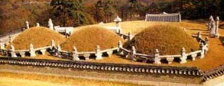
王妃
端圣粹元敬惠靖顺孝显王后金氏（籍安东）
领敦宁府事永兴府院君赠领议政孝简公金祖根女。安东金氏（纯祖纯元王后）一派的外戚。1828年戊子（纯祖二十八年）三月十四日生于安国坊外氏第。1844年丁酉册封王妃，行嘉礼于於义洞本宫（孝宗潜邸）。1843年癸卯（宪宗九年）八月二十五日去世于昌德宫之大造殿，终年十六。葬杨州景陵。高宗追上尊号为孝显成皇后。
继妃
明宪淑敬睿仁正穆弘圣章纯贞徽庄昭端禧粹显懿献孝定王后洪氏（籍南阳）
领敦宁府事益丰府院君赠领议政翼献公洪在龙女。1831年辛卯（纯祖三十一年）正月二十二日生于咸悦公衙。1844年甲辰册封王妃，行嘉礼于於义洞本宫（孝宗潜邸）。哲宗即位后进号大妃。1904年甲辰（韩国光武八年）去世于昌德宫，终年七十四。葬景陵。高宗上尊号为孝定成皇后。
子女
一女 ■（宫人金氏出）[早卒]
哲宗熙伦正极粹德纯圣钦命光道敦元彰化文显武成献仁英孝大王 李�N
李�N（1831―1863）字道升，号大勇斋
全溪大院君 （见庄献世子子孙录） 第三子。母为龙城府大夫人廉氏。1831年辛卯 （纯祖三十一年） 六月十七日生于庆幸坊私第
（全溪大院君第） 。1849年己酉六月六日，宪宗大王去世，无子。此时由正祖、纯祖、翼宗一脉单传下来的男性后代已经断绝，只能上溯到庄献世子的其他各子中去寻找继位者。庄献世子长子懿昭世孙早死，次子正祖一支已经绝嗣，所以依据长幼顺序，选定庄献世子第三子恩彦君李�P的孙子。而这一支也人丁不旺，且有宗法“长子不（过继）为人后”的规定，只能从次子、三子里面去找。于是选定了全溪君李�康牡谌�子李�N。六月八日，十八岁的李�N奉纯祖纯元王后金氏之命，封德完君，承纯祖之嗣。次日行冠礼，即位于昌德宫之仁政门。
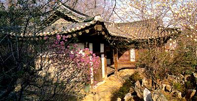
哲宗潜邸，全溪大院君第
就象中国历史上一些王朝末年帝王家庭子息不旺一样，朝鲜李朝此时也面临到这个问题。除了国王本身的身体原因外，宫廷中的种种灭胎换胎的阴谋也防不胜防。哲宗生有五子，均未名而夭。其原因多为中毒或者投毒。所谓中毒，当时朝鲜宫廷妇女化妆脂粉多用含铅、汞的化妆品，长期施用必定造成慢性重金属中毒，影响到下一代的健康。至于投毒，也可理解。母以子贵，要想在众多的嫔妃中争宠，夺得国王的喜爱，只有生育男孩一途。所以她们也格外嫉妒那些怀孕或者产下男孩的嫔妃宫女，想方设法加以暗害。这种做法在中国的皇帝宫廷中也屡见不鲜，最有名的是明宪宗的万贵妃。无独有偶，当时的日本宫廷也有类似现象。当时日本宫廷中流传着恐怖的传说，说天皇的儿子一到长牙的时候，死神就会降临到他们身上，婴儿哇地一声大叫便气绝而亡。明治天皇唯一活到成年的儿子――万事皇太子嘉仁（大正天皇），在未出世之间也遭到了种种暗害。其生母柳原爱子刚一怀孕，就有人在皇宫地板上抹了一层桐油，想让她滑倒流产。在宫城的红叶山上还发现了诅咒她和孩子的纸人、草人。在嘉仁出生前夜，还有人在她的住处放了一盆水，里面有一个泡得鼓鼓胀账的袋子，里面全是黄豆，意思是诅咒她腹中的婴儿难产，象袋子中的黄豆一样永远不能出来（大正天皇成年之后罹患脑病，被认为是和胎儿时期受到的损害有关）。至于朝鲜宫廷中的投毒事件，五百年中也是一样地常见，李朝后期尤其繁多。
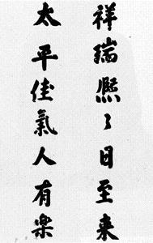
哲宗的一生给后人留下的印象是很差的。时人和后人对哲宗的评价是“荒游嬉戏”、“好色”。这也是他为什么三十多岁便早早去世的原因。当然，如果他有孩子继承王位，估计朝鲜人就不敢这么评论他了吧。不过因为他死得早，所以没有赶上朝鲜最波折动荡的时代，除了仍被追剿的天主教之外，没有什么事情对李氏王朝造成更大的威胁。这究竟是国家的幸运还是不幸呢？
1863年（哲宗十四年）十二月八日，李�N去世于昌德宫之大造殿。在位十四年，终年三十三。葬高阳睿陵。清朝赐谥忠敬。高宗追上帝号为哲宗章皇帝。
王妃
明纯徽圣正元粹宁敬献庄穆哲仁王后金氏 （籍安东）
领敦宁府事永恩府院君赠领议政忠纯公金汶根女。属于安东金氏外戚集团。丁酉 （宪宗三年） 三月二十三日生于顺化坊私第。辛亥册封王妃行嘉礼于於义洞本宫
（孝宗潜邸）。高宗即位后进号大妃。高宗十五年五月十二日去世于昌庆宫之养和堂，终年四十二。葬睿陵。高宗追上尊号哲仁章皇后。
子女
嫡长子 （王后生）[早卒]
长子 （贵人朴氏出） [早卒]
次子 （贵人赵氏出） [早卒]
三子 （贵人赵氏出） [早卒]
四子 （宫人李氏出） [早卒]
长女 （淑仪方氏出） [早卒]
次女 （淑仪方氏出） [早卒]
三女 （宫人金氏出） [早卒]
四女 永惠翁主（淑仪范氏出）
五女 （宫人朴氏出） [早卒]
六女 （宫人李氏出） [早卒]
兴宣大院君 大院位大监 献懿公 李�g��
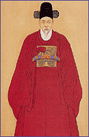
李�g��（1820―1898），字对伯，号石坡。
南延君忠正公李球第四子。南延君是仁祖第三子麟坪大君的六世孙，被过继给庄献世子第四子恩信君李�G为后。高宗即位时年仅十二岁，不能亲理政务，由李�g应摄政，号兴宣大院君。1873年11月，高宗之妃闵妃以“国王亲政”为由，夺取大权。1882年6月“壬午兵变”后，大院君又乘机掌握了政权。不久，被清军拘捕，押送天津，被监禁于保定府。1885年获释回国。1894年春，朝鲜“东学道”农民起义爆发，朝鲜国王请清兵助剿。对朝鲜垂涎已久的日本乘机挑起事端。6月8日派混成旅团入侵朝鲜，并向朝鲜政府提出“改革”内政要求。被拒后，于7月23日派兵攻占朝鲜王宫，监禁朝鲜国王李熙。另派一支部队包围并占领云岘宫，俘掳了大院君李�g应，成立傀儡政府。日本人虽然用刺刀建立了以大院君为首的傀儡政权，但对于大院君并不放心。认为：“大院君七十五年来只知有中国，不知有其他，自顶至踵完全为顽固二字所充满的老翁”，表面上“巧言令色向我们求媚”，暗中却“托在平壤之华将转达其心意于清廷”。特别是8月10日，进驻平壤的清军左宝贵等率军渡大同江南下到达中和附近时，据日方史料记载“大院君事大心热中沸腾，任其爱孙为壮卫营大将，掌握兵权。阳对日本大鸟公使表示非常诚恳，却阴与中国结托，策划奸黠隐谋，与在平壤清军暗通，表里相援，企图擒捉日本公使”。“并和东学党相呼应，企图驱逐我兵”。大院君的确没有死心塌地作日本人的傀儡。据清人姚锡光《东方兵事纪略》记载，日军占领汉城后：“朝鲜君臣民庶制于倭人兵力，望我军捷音有若望岁，其王京自大院君以下，时密输倭人消息于我，日盼我军进趋汉城”。日本也只是暂时利用大院君，同年十二月将其流放。此后离开政治舞台，退居汉城云岘宫。1898年2月死，终年七十九岁。葬坡州云川面旧长陵大德园。1907年8月24日上尊号为大院王。
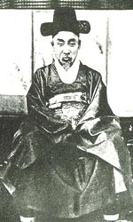
大院君夫人骊兴闵氏为天主教徒，同南人洪凤周、北人南钟三等著名天主教徒多有来往。洪凤周为高宗乳母朴召史之夫。
大院君生有三子三女。长子完兴君李载冕，后为宫内大臣，晋封兴亲王，日本合并后封为公爵。次子翼成君李载晃即为高宗，承翼宗嗣。庶长子李载先在1881年5月图谋废黜高宗、推翻闵氏集团、拥立李载先为国王的一场未遂政变后获罪赐死。
高宗 统天隆运肇极敦伦正圣光义明功大德尧峻舜徽禹谟汤敬应命立纪至化神烈巍勋洪业启基宣历乾行坤定英毅弘休寿康文宪武章仁翼贞孝太皇帝
李熙
李熙（1852―1919）字圣临，初名载晃，字明夫，号诚轩
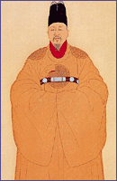
兴宣大院君（见肃宗大王子孙录）嫡第二子，母骊兴府大夫人闵氏。1852年壬子（哲宗三年，咸丰二年）七月二十五日生于贞善坊私第（兴宣大院君第）。1863年癸亥（同治二年）哲宗去世，无子，奉翼宗神贞王后赵氏之命入承翼宗大统，封翼成君，行冠礼。十二月十三日即位于昌德宫之仁政门。
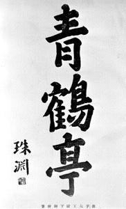 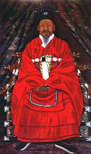
高宗即位之后，朝鲜李朝五百年来首次出现了国王本生父大院君在世并执掌政务的局面。大院君执政后采取严格措施迫害天主教徒，全国有12万天主教徒被捕，包括12名法国传教士，其中9人被害。此举导致法国在1866年派出军舰出兵朝鲜西海岸寻求报复，史称“丙寅洋扰”。1871年，美国驻华公使要求朝鲜开国，遭到拒绝，美国军舰前往江华岛示威，史称“辛未洋扰”。两次洋扰均以外国军舰撤兵作罢告终，大院君认为这是锁国政策的成功，于是日益颟顸固执，顽固保守，在汉城和各地树立“斥和碑”，上书“洋夷侵犯，非战则和，主和卖国，戒我万年子孙”。
1873年，高宗年满二十一岁而宣告亲政。闵妃外戚集团把持的新政府主张废除封闭锁国的做法，在面临洋夷入侵的情况下恢复同日本的国交。但是因为日本试图令朝鲜解除与中国的宗藩关系而受到朝方的拖延。日本此时也在东亚积极扩张势力。1867年12月，孝明天皇在京都皇宫中被毒死。1868年1月3日，倒幕派在西乡隆盛、木户孝允、大久保利通的领导下发动政变，德川家第15代将军德川庆喜被迫宣布“王政复古”，日本开始进入明治时代。而此时的朝鲜，尚在兴宣大院君李是应的锁国统治下。1868年3月，明治政府应对马藩的要求，依旧例将对朝外交事务全权委托给对马藩。日本政府委托对马藩交给朝鲜“王政复古”的告知书，因书中有“皇帝”“朝臣”“奉敕”等只有中国皇帝才能使用的字眼，朝鲜拒绝接受。之后明治政府派外务权大录佐田白茅出访朝鲜，但朝鲜不接待对马藩之外的日本使节。佐田在釜山滞留交涉期间探知了朝鲜的国情，回国后大力倡导“征韩论”。为了催促朝鲜加快建立日韩国交的速度，日本派出军舰云扬号、第二丁卯号前往朝鲜西海岸示威并测量海图，与江华岛炮台发生交火。史称“江华岛事件”（云扬号事件）。之后日本以当年美国佩里舰队的开国要求为蓝本，勒令朝鲜迅速开国。次年日本与朝鲜在江华岛讲武堂签定《大日本国大朝鲜国修好条约》，史称江华条约。条约中规定朝鲜开放釜山、元山、仁川三港；日本派驻公使和领事；日本在朝鲜享有领事裁判权等等内容。此后又签定了相关的通商章程。
此时朝鲜的一些有识之士已经看到了实行改革的必要性。1879年，礼曹参议金宏集（金弘集）率团访问日本，商谈仁川开港、米谷禁运、修改关税等问题。他于1880年回国时，带回一本清朝驻日公使馆的官员黄遵宪所写的小册子，名为《朝鲜策略》。该书建议韩国为了求得经济发展应接受欧洲的各种体制和技术，并同中国、日本和美国合作，加强自己的防卫能力，以阻遏俄国向南扩张。实际上该书体现了当时清朝外交的基本政策，即抵御沙俄，牵制日本，拉拢美国。这一“策略”在韩国一披露，于1876年曾主张赶走日本势力的儒学家便发动了一个强烈反对外国资本主义渗入的运动。这一运动很快便在庆尚道、江原道、京畿道、忠清道和全罗道的儒学者中扩展开来。朝鲜政府于1881年派一批年轻贵族，即所谓“绅士游览团”去日本考察行政、军事、教育、工业和技术体制。与此同时，应清朝的要求，另一批由吏曹参议金允植率领的60名朝鲜青年访问了中国。在那里他们主要是研习制造和操作西方武器的技艺。这种改革尝试发自政府本身，所以改革的浪潮不久便广为蔓延，不仅席卷了两班和中等阶级，而且席卷了整个社会。1882年5月，朝鲜与美国签订《朝美修好条约》，隐士之国正式对西方打开了国门。条约签订后，英、法、德、俄、意、奥、比、荷、丹等国接踵而来，签订了类似条约。任何反对意见也无法扭转历史变革的车轮了。
闵妃集团执掌国政后，国际国内局势动荡。大院君归政下野，原来的亲信、下属以及大批南人失势。于是大院君派系的前官员安骥泳等人利用各地儒生忧国忧民、激昂上疏的情绪，在1881年密谋废黜高宗，推翻闵氏集团、拥立大院君庶长子李载先为国王。8月28日，因人告密，朝鲜政府将李载先和30多名政变骨干逮捕并处死。但是闵氏集团并未因此而有所收敛，照旧贪污腐化、挥霍无度，大院君新近重建的王朝正宫――景福宫中夜夜曲宴淫戏，保佑巫祝，灯烛如昼，连曙不休。朝鲜国库积蓄荡尽，无饷米供养军队，无俸禄供养百官。官员俸禄短缺五六年，五营军饷短缺13期，不少军人无法度日。而由日本教官协办、多未两班子弟组成的新军则装备精良，待遇优厚，引起旧五营军人的不满和怨恨。如此种种，终于酿成1882年的壬午兵变。
1882年春季，朝鲜发生大旱，又有宫中闹鬼的异象传出，京城内人心惶惶，传说该年将有兵灾。该年七月二十三日（公历，农历则为五月），已经连续十三个月没有领到饷米的京城五营士兵发生骚动，惊动了京城宣惠厅，急忙将刚运来的漕米发放下去，但是米中掺入砂糠等物，不堪食用。士兵与库吏理论，发生冲突，汉城捕盗厅要将为首士兵四人逮捕斩首。士兵们积怨爆发，同市民一起发动暴动，捣毁宣惠厅堂上官闵谦镐以及闵台镐、韩圭稷等外戚权贵宅第，夺取武库，攻打捕盗厅，包围大院君府第云岘宫向其求助。还有几路分别攻打日本公使馆，处死日本新军教官，开仓放粮。次日乱兵和市民攻入昌德宫，杀死躲藏在宫中的闵谦镐、李最应（大院君胞兄），并搜寻闵妃。闵妃化妆成宫女逃往外地。日本公使花房义质和随员也逃往汉城，由英国军舰搭救回国。二十五日，高宗召大院君入宫，委其主政，并宣布闵妃已经死于动乱中，士兵方才撤出王宫，放下武器。逃到忠州的闵妃和逃回长崎的花房义质分别请求清朝和日本出兵朝鲜。直隶总督张树声和从原籍赶回的李鸿章派吴长庆率军在南阳登陆，不久赶到汉城。吴长庆认为大院君“积威震主”，其本人和党羽与国王和王妃“久成嫌衅”，如果留其在朝鲜国内，必定父子不能保全，于是扣留了前往中国军营拜访的大院君，并用军舰将其运回中国，软禁在保定。清军同时逮捕了李载冕等人，并在汉城郊区逮捕参加过壬午兵变的士兵，闵妃集团重新掌握朝鲜政权。日本公使花房则于8月12日回到汉城，带来了1500军队和四艘军舰，逼迫朝鲜政府赔偿损失、同意日本军驻扎朝鲜。8月30日日本和朝鲜就上述内容签订了《济物浦条约》。另外一方面，在清朝洋务派的协助下，朝鲜开始了近代化改革，设立内外衙门，开办外交、通商、海关等事务，代购洋枪洋炮，代训新军，培养朝鲜的军事人才。清朝还依据与朝鲜的通商条约，在朝鲜的仁川、元山、釜山等港口城市设立了清国租界。
此时朝鲜统治集团已经分成了两派。一派是闵妃集团中的绝大部分，他们借助清朝的兵力夺回政权，心怀感激，采取亲华政策，被称为“事大党”。另外一派以1881年赴日“绅士游览团”中的年轻士族为主，包括师从福泽谕吉的金玉均，以及鱼允中、洪英植、朴泳孝等人。他们采取亲日态度，主张终结与清朝的宗藩关系，借助日本之力实现朝鲜的开化改革，被称为“开化党”。开化党接受日本资助，提出了“打倒清国”的口号，企图借助日军兵力发动政变，实施夺权目标。1884年，中法战争爆发，驻扎朝鲜的一部分清军撤回国内，日本以及朝鲜开化派视为举事良机，开始蠢蠢欲动。此时朝鲜政府因为中法战争胜负未定，对清朝的信心也发生了动摇。11月29日，金玉均入宫，对高宗游说说中日如果交战，清朝必败，朝鲜当自图万全之策，并夸口说会得到日本的全面协助。高宗为其所动，乃亲书秘敕交给金玉均，授予其“便宜行事之权”。金玉均与开化派激进分子经过密谈，决定在12月4日邮政总局开业之机发动政变。
12月4日晚，汉城邮政总局落成，洪英植设宴庆祝。开化党在宫中举火未遂，乃焚烧邮政总局隔壁房屋。禁卫大将闵泳翊冲出救火，被刺客用刀砍伤，挣扎返回邮政总局宴会大厅，宾客大惊，四散奔逃，开化党在邮政总局内全歼诸大臣的计划落空。金玉均赶往昌德宫，称清军作乱，劫持国王和闵妃，逃往供奉历代先王画像的别宫景佑宫（以其地狭，易派兵守卫）。金玉均强迫国王书写诏书，召大臣前往景佑宫保护国王，同时请求日本公使竹添进一郎派日本兵担任警卫。当夜，奉诏赶往景佑宫护驾的大臣闵台镐、闵泳穆、赵宁夏、韩圭稷等逐一在宫门内被开化派杀害。次日清晨，新政府宣告成立，提出内政改革方案，同时宣布断绝与清朝的宗藩关系，朝鲜独立。
开化派本来没有群众基础，如今又与日本兵勾结，劫持国王，杀害大臣，所以社会上流言四起，说王妃已被开化派杀害，国王生死未卜，开化派将另立新君。人民不满开化派作乱犯上的作为，纷纷聚集起来，要杀尽倭奴，解救国王。12月6日，金允植、南延哲等被列入新政府名单的旧大臣致书清营，痛哭乞师。清军将领吴兆有、袁世凯带兵入宫，与日军在宫内展开战斗。清军得到朝鲜士兵的支持，日军抵挡不住，竹添公使被迫焚烧公使馆，再次出逃仁川。洪英植将高宗挟持到城北关帝庙，深夜才被清军找到，护送回宫，洪英植被愤怒的朝鲜士兵杀死。金玉均、朴泳孝等人随日本人逃窜到仁川，随后亡命日本。其他不及亡命的激进派开化党被愤怒的汉城市民殴杀。此次变乱史称甲申政变。
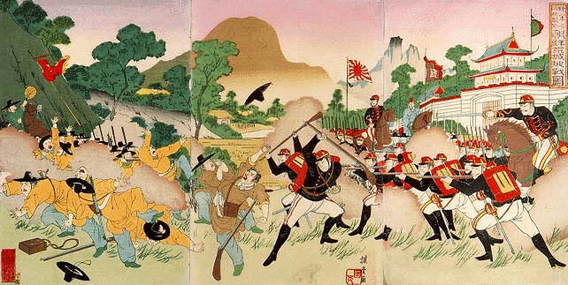
《朝鲜京城挑战图》，日本绘画
甲申政变被平息后，1885年1月9日，日本再次强迫朝鲜签订汉城条约，勒索赔款，之后伊藤博文前往天津与李鸿章会晤，中日两国签署天津条约，规定双方撤出在朝鲜兵力，聘请第三国人员协助朝鲜的军事改革，今后两国若要出兵朝鲜时须预先知会另一国等等。天津条约后，李鸿章与伊藤博文各有一段话发人深省。李鸿章云十年之内日本富强必有可观，此中土之远患。伊藤博文则说中国在中法战争后似乎奋发有为，但是一二年后必定因循而安，如西方所说，中国又睡觉矣。
天津条约之后，清朝眼见英亡缅甸，法并越南，日吞琉球，中国的藩属惟独朝鲜尚存，亦有俄国、日本虎视眈眈，再加上朝鲜战略位置重要，为东北、华北之屏障，所以决定力保这一最后的藩属国，所以加强了对朝鲜内政、外交的控制，将名义上的藩属关系实际化。此时清朝对如何处置朝鲜，有众多意见。有人主张设置监国，全掌朝鲜内政外交。有人主张吞并朝鲜，设为郡县。有人主张朝鲜宣布中立，由中、美、日、俄等国共同保护。前两种意见引起了朝鲜和西方各国的担心，但是实际上不过是清朝官员的个人意见。最后清朝采取了类似第一种方案的措施，派遣袁世凯以三品道员头衔坐镇朝鲜，主掌朝鲜外交、通商等事务，俨然监国大臣。1890年（高宗二十七年，光绪十六年）六月，醇亲王、李鸿章及王大臣共同会议朝鲜政策，形成了朝鲜“整顿事宜六条”：1，精练水陆各军；2，东三省兴铁路；3，该国税司由中国委派；4，该国派使应守属国体制；5，阻止该国借外债；6，匡正该国纰政。袁世凯为人精明而多疑，能干且果断，在朝鲜全力推行上述六条内容。朝鲜对于清朝加强对朝鲜内政外交控制的这种作法自然心怀不满，再加上1885年中国释放大院君回国，所以高宗和闵妃开始采取亲俄路线。鱼允中、金弘集等亲华大臣被免职调任，主张联俄拒清的一批新官员得到闵妃集团的任用。1886年，发生“第二次朝俄密约事件”，大臣闵泳翊密告袁世凯，声称国王密令内务总理大臣沈舜泽与俄国驻朝鲜公使韦伯签署密约，要求俄国予以保护，俄国兵舰将至朝鲜云云。袁世凯因此晋见高宗，称俄为虎狼之国，力陈联俄之不可行，并密电国内，预备出兵朝鲜废黜高宗，另立新王。朝鲜和俄国则辩称并无此事。后来事实证明此密约是英国领事为了对付俄国而制造的伪文。
清朝末年，尤其是同治、光绪年间，禁止人民出柳条边垦殖的禁令，已经废弛多年。许多京畿、山东的贫苦农民纷纷携家带口“闯关东”。而朝鲜方面则由于李朝末年的数次大灾，又有大批饥民越过图们江到中国境内，垦荒种地，盖屋定居。光绪初年，朝鲜移民问题已经很严重。吉林将军铭安、督办边防吴大澄上疏道：“……其国边民屡被水灾，连年荒歉，无地耕种，陆续渡江开垦，已熟之地，不下两千晌，其国穷民数千人赖以糊口。有朝鲜咸镜道刺史发给执照，分段往册等语。臣查吉林与朝鲜毗邻之处，向以土门江为界。今朝鲜贫民所垦开荒在江北岸，其为吉林辖境无疑。……若照旧例驱逐出界，恐数千无告穷民同时失所，殊甚怜悯。拟请饬下礼部，咨明朝鲜国王，派员会同吉林委员查勘明确，划清界址。所有其国民人，寄居户口，已垦荒地，恳恩准其查照吉林向章，每晌缴荒钱二千一百文，每年每晌完佃地租钱六百六十文，由臣铭安饬司给颁执照，……其咸镜道刺史所给执照，饬令收回销毁”云云。1890年（高宗二十七年，光绪十六年），有朝鲜勘界之案。是年清国总理衙门奏称，虽然允许朝鲜流民入吉林珲春、敦化县户籍，开垦定居，但是在朝鲜国王刷还流民的请求下，吉林将军给以一年为限，允许朝鲜官员来吉林协助遣返朝鲜移民。期满后不但流民未还，朝鲜反而又纵容流民过江侵占土地，究其原因，“乃其国始误以豆满、图们为两江，继误指内地海兰河为分界之江，终误以松花江发源之通化松沟子有土堆如门，附会‘土门’之义，执意强辩。继经希元派员查勘石乙水为图们江正源，议与长水分界，绘具图说，于十三年十一月奏奉谕旨咨照其国王遵办在案。乃国王不加详考，遂信朝鲜勘界使李重夏偏执之词，坚请以红土山水为界。……臣等查吉林、朝鲜界务，前经两次会勘，其未能即定者，特茂山以上直接汲泡水二百余里之图们江源耳。至茂山以下图们江巨流，乃天然界限。江南为朝鲜咸镜道所属之茂山、庆源、钟城、会宁、庆兴等六府地方，江北岸为吉林之珲春及敦化县地方。朝鲜勘界使亦无异说。……现在江源界址既难克日划清，则无庸勘察处所，似宜及时抚绥。”于是江源和白头山天池地区的勘界工作就此搁置，再未提及。白头山和天池地区，在穆克登勘察之后，虽树立界碑，但是由于人迹罕至，历经多年之后界碑坍塌，再加上古代绘制地图方法的缺陷，清朝和之后的民国一直认为该地区，包括整个天池，仍然属于中国。由于在穆克登之后，中国一直没有对这一地区做过勘察，所以只提出了大致的领土划分界限，即西头水和小红丹水之间，自朝鲜新德、青峰、大坪、内曲里至鸭绿江一线。但是此地区居民以朝鲜边民为主。中国未对该地区派出行政和军事统领官员。也就是说，未对该地区行使过有效主权。朝鲜则以咸镜道的惠山和茂山两府官员管辖此地区，征收赋税，勒管边民。
1894年甲午（高宗三十一年，光绪二十年，日本明治二十七年），朝鲜爆发甲午农民战争。两湖招讨使洪启薰兵败，上疏请借外国援兵。1894年6月3日，朝鲜政府照会清朝，请求出兵。此事即甲午战争之开端。甲午战争之起因、经过、海战、陆战、结局以及马关条约国内已有多篇巨著详细阐述，此处不再赘述。日军在中日开战前夕迅速攻占汉城（6月21日），控制国王，强迫其归政于大院君。6月23日，新组成的亲日派朝鲜政府宣布废除与清朝签订的一切条约，朝鲜将依赖日军从朝鲜领土上驱逐清朝军队。在中日战争中又强迫朝鲜签订与日本的同盟条约，共同反对清朝。但是此时朝鲜反日情绪甚于反清，甚至被日本人抬出来的大院君都在秘密地与清朝联络，试图里应外合驱逐日本侵略者。甲午战后，在日本协助下，朝鲜新政府设立“军国机务处”，开始了内政改革，包括废除吏户礼兵工刑六曹，设立内务、外交、度支、军务、法务、农商务、学务、工务八部；废除八道，设立二十三府；宫府分离，政府以总理大臣执掌，宫廷事务由宫内大臣执掌；废除科举考试；还有使用李朝开国纪年、对腐败官员的纪律处置、放宽贸易活动限制、建立银本位的新货币制、在财政部管辖下统一财政管理、度量衡标准化、一切赋税用现金缴纳、建立股份公司、依据法院改组法把司法权分离、统一警察力量等社会、财政、文化等等方面的改革措施共208条，史称“甲午更张”。1895年1月7日（高宗三十一年十二月十六日），高宗率领世子、百官参拜宗庙，举行誓告典礼，宣布《洪范十四条》，其中第一条即宣告“割断依附清国虑念，确建独立自主基础”，正式宣告朝鲜半岛与中华帝国上千年的宗藩关系就此终结。
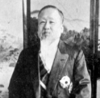
甲午战争后，高宗和闵妃集团对中国彻底失去了依附的信心和基础，他们看到日本在俄国的干涉下被迫将辽东交还给中国，又对俄国产生了幻想，朝鲜国内也产生了企图利用俄国来牵制日本的新党派。1895年年中，朝鲜政府以策划暗杀闵妃为由下令逮捕亲日派大臣朴泳孝，朴泳孝被迫亡命日本。闵妃日益亲俄，俄国在朝鲜的势力和影响也越来越大。在这种情况下，1895年10月8日拂晓，日本公使三浦梧楼率领日本士兵、浪人，挟持大院君冲入景福宫，在乾清宫集玉轩乱刀砍死了闵妃，并浇上煤油点火焚尸，清除了宫中的亲俄派势力，次日组成了以金弘集为首的新政府（金弘集此时已从亲华转变为亲日），史称乙未事变。宫中警卫部队的美国教官目睹了日本警官冲进后宫的行动，于是乙未事变的真相得以流传开来。日本政府为此派小村寿太郎前往汉城调查事情真相，将有关人员送会日本，以谋杀、聚众行凶的罪名提交预审，但是犯人都被广岛地方法院宣判无罪。日本政府的虚伪嘴脸由此可见一斑。金弘集内阁宣布实行公历，改开国五百零四年十一月十七日为五百零五年一月一日（1896年1月1日），并建元号为“建阳”。同时还宣布了断发令，要求朝鲜人民剪发易服。此举引发了朝鲜全国范围内的不满情绪。俄国公使韦伯利用这一形势，从停泊在仁川的兵舰上调兵100多人至汉城，经与亲俄派协商后，1896年2月11日，不堪忍受日本人和亲日派胁迫的高宗率领王世子出走俄国公使馆（俄馆播迁事件）。高宗在俄国公使馆命令逮捕逆贼五大臣，总理大臣金弘集在俄馆播迁当天即倒台，和农工商大臣郑秉夏在押送入狱途中被巡检和市民打死，逃亡外地的度支大臣鱼允中也在回乡途中被杀，内部大臣、法部大臣和前军部大臣逃亡日本。朝鲜建立起以金柄植为总理大臣、李完用为外部大臣的亲俄政权。1897年2月11日，高宗一行离开俄国使馆，返回庆云宫（现为德寿宫），并宣布改国号为大韩帝国，改建阳二年为光武元年，改国王为皇帝，王世子为皇太子，追封闵妃为皇后，并在汉城的圜丘和皇穹宇祭拜天地（在中华文化圈里，祭天是中国皇帝的特权，藩属国如朝鲜、琉球、越南是没有资格祭天的）。此后日本与俄国先后签署了小村―韦伯协定、山县―罗巴洛夫协定、西―罗仙协定，协调两国在朝鲜的势力范围和各种利益。而清朝则与朝鲜/大韩帝国建立了平等的近代外交关系。
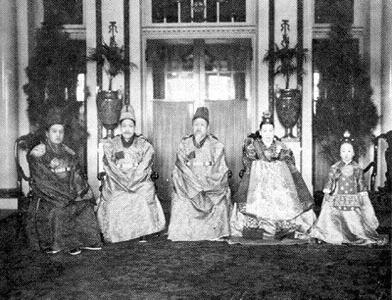
高宗一家。左起为义亲王、纯宗、高宗、纯宗妃闵氏、德惠翁主。图片摄于德寿宫石造殿（西洋式宫殿）
1903年前后，日本和俄国的矛盾逐渐激化。日本主张“满韩交换”，日俄分别占有朝鲜和满洲。俄国则主张独占满洲，以北纬39度以北的朝鲜半岛为俄国势力范围，39线以南为日本势力范围，但是日本不可将其用于军事目的。1904年2月10日，日本对俄国宣战，日俄战争爆发，韩国被迫签订六条议定书，协助日本作战。战争结束后，日本公使林权助又强迫韩国签署日韩新协约（第一次日韩协约），规定韩国雇用日本财政和外交顾问、与外国缔结条约前要与日本协商等等。1905年日本派遣数万军队开入汉城，包围王宫，强迫韩国外部大臣朴齐纯签订了《日韩保护协约》（第二次日韩协约，又称“乙巳保护条约”），共有
5条：第一，“今后韩国对于外国的关系及事务”，“由(日本)外务省监理指挥”，在外国的韩国侨民及利益，由“日本国的外交及领事保护”。第二，“由日本负责履行韩国与外国所签订的现存条约，今后不经过日本政府同意，不得签订任何国际性的条约及协定”。第三，由日本政府设统监一名，专理外交一项，驻扎汉城，日本政府还往各地方派驻理事官，“在统监指挥之下，行使从前属于驻韩日本领事的一切职务，并掌管本协约的完全实施”。第四，“日本韩国之间的现存条约及协定，凡不抵触本协约的条款，均继续有效。”第五，“日本政府保证维持韩国皇室的安宁及尊严”。根据这个协约，韩国撤消外交机关，并不设外务大臣职务，这样，韩国就失去外交及内政主权，变成日本的保护国，实际上已成为日本的殖民地。《日韩保护协约》签订的消息传出后，立即激起韩国人民的强烈反对。签约的当天，卖国贼李完用家被人放了火。韩国各阶层人民一致要求“废除保护协约”、“驱逐倭寇、诛灭五贼”。《皇城日报》立即把签约的真相公布于世。称保护协约公布之日为韩国“全民哀悼的日子”。主笔张志渊所撰写的题为“是日也，放声大哭”的社论，反映了韩国人民对保护协约痛恨之情。文中写道“学生闭校痛哭，教徒呼天悲泣，商贾撤市狂呼，儒生投章叫阖，元老大臣抗事累日，而日人或以兵劫之，或拘而辱之。于是侍从武官长闵泳焕拔刀自刎，原任议政大臣赵秉世饮药自裁，殉于独立。农民金台根在水原停车投石击伊藤博文不中。奇山度、李种大、金锡恒等十一人谋刺……五贼，事浅被逮，李建爽呕血死狱中。”此后，在韩国全国形成了声势浩大的反抗运动和第二次反日义兵斗争。此时主掌韩国国政的学部大臣李完用、军部大臣李根泽、内部大臣李址�g、外部大臣朴齐纯、农工商大臣权重显被韩国人民骂为“乙巳五贼”。《日韩保护协约》签订后，日本对韩国的控制由顾问统治转为日本韩国统监府的太上皇统治。11月23日，日本政府公布了协约全文，并将此事通知与韩国有外交关系的各国政府，要它们撤走驻韩外交代表机构。在各国外交使团尚未撤离时，日本就关闭了驻汉城的使馆，成立了统治朝鲜的新机关――统监府，派枢密院院长伊藤博文为第一任统监，各道的日本领事馆也撤销，成立了统监府的地方机关――理事厅。
《日韩保护协约》签订不久，国王高宗就秘密写信给美、俄、德、法4 国首脑，宣布《日韩保护协约》无效。1907年，海牙召开第二届万国和平会议。高宗秘遣李俊、李玮钟等三人带着高宗致俄国沙皇的书信和参加会议的委任状前往海牙，控诉日本对韩国的侵略，呼吁各国声援韩国，宣布日韩保护条约无效。由于与会各国均承认日本对韩国的保护权，于是向高宗确认代表身份，此时韩国电信权落入日本手中，询问电被日方扣留，伊藤博文闻讯大怒，通知和会委任状系伪造。李俊愤而剖腹自杀，以明清白。日本指责韩国违反了保护条约。伊藤威胁高宗说：
“陛下用如此阴险手段蹂躏日本的保护权，不如对日宣战”，“陛下若想抵抗日本，不必秘密进行，大可以公开干”。伊藤还唆使韩国卖国组织“一进会”开展要求高宗退位的活动。在伊藤的指使和恫吓之下，李完用内阁
7月6日至18日举行3次御前会议。会上农商工部大臣、一进会会长宋秉峻对高宗进行威胁说：“今为陛下着想，只有两计：一则陛下亲赴日本，向其(天皇)谢罪，二则陛下……迎长谷川(好道)司令官，向其谢罪”，不然开战败后将如何受辱，难以设想。”17日，李完用等7大臣逼迫高宗退位，高宗忍无可忍，拍案怒斥道：“卿等欲将朕卖与统监乎！”同日日本外相林董抵达汉城，和总理大臣李完用一起逼高宗退位，双方僵持不下。高宗宣布“军国大事由皇太子代理”，日本人却诡称韩国皇帝已经退位。1907年7月19日，日军在汉城南山倭城台正对着庆云宫驾设6门大炮，并派日军包围庆运宫。在日本兵严密看护下，在庆云宫中和殿举行禅位仪式。皇太子李�p即位，是为纯宗。
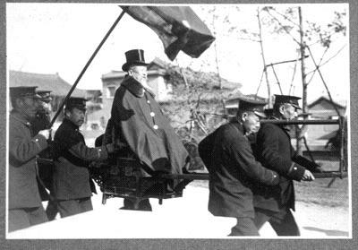
“李太王”时代的高宗
高宗被迫退位后，称太上皇，被日军监视居住于庆云宫（改名德寿宫）内。1910年日韩合并，韩国皇帝、太上皇和皇太子被授予日本皇族的身份，高宗的封号降为“德寿宫李太王”。1919年1月22日凌晨三时，高宗突然在德寿宫去世，终年六十八岁。关于其死因，日本朝鲜总督公布为“脑溢血发作”，但是没有病理报告，自然不太可信。韩国民众认为是因为高宗计划向巴黎和会派遣密使，代表韩国民众诉说在日本总督统治下韩国的苦难，要求韩国独立，但是这一计划被泄露了，所以日本朝鲜总督府命令高宗身边的侍从在高宗的御膳里暗中下了毒。高宗去世当晚用了解毒的醋，不久便毒性发作，痛苦地说“我吃的是什么东西，这么难过”，不久便死去，死后两眼发赤，全身有红斑，且很快腐烂。此说也有很多疑点，包括去世时间（凌晨三点已过用膳时间），以及尸体很快腐烂，因为中毒时间为冬天，且若是毒死，以当时的药学水平，无非砒霜水银鸦片之类，尸体应该有其他异象，而不是腐烂速度加快（X档案？）。不过以日本人一贯的阴险狠毒来看，下毒之说的确很有可能是真的。1919年3月1日，在为去世的高宗举行国葬的时候，朝鲜国民借悼念这位一生经历坎坷的国王的机会，在各地聚集游行，要求朝鲜独立。是为“三・一”运动，也是朝鲜近代独立斗争的一个重要转折点。
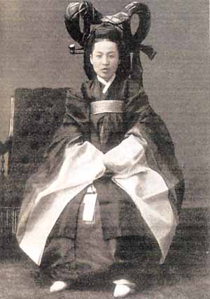
明成皇后
皇后
孝慈元圣正化合天明成太皇后闵氏（籍骊兴）
佥正赠领议政骊城府院君纯简公闵致禄女。1851年辛亥（哲宗二年）九月二十五日生于骊州近东面蟾乐里。骊兴闵氏外戚集团的核心人物，朝鲜近代历史上著名的女性。擅长权术，热中于权力。1866年丙寅册封王妃，行嘉礼于汉城云岘宫（兴宣大院君第）。1895年乙未（高宗三十二年，光绪二十一年）10月8日于“乙未事变”中被日本军队弑害于景福宫的乾清宫。后高宗被迫废其为庶人，但是1897年复其正宫称号，谥明成太皇后。葬金谷洪陵。
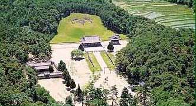
洪陵
子女
嫡子
长子 元子[早卒]
次子 王世子 李�p（纯宗）
三子 大君 [早卒]
四子 大君 [早卒]
长女 公主 [早卒]
庶子
长子 完和君李��（淑媛李氏出）后封完亲王
次子 义和君李�眨ü�人张氏出）后封义亲王
三子 英亲王李垠（德安宫贵妃严氏生）后封皇太子
长女 （宫人李氏出）[早卒]
次女 （淑媛李氏出）[早卒]
三女 德惠翁主 亦被迫前往日本女子学习院留学，同日本对马藩伯爵宗武志结婚，后因环境刺激，患早发性痴呆，战后离婚。
纯宗 文温武宁敦仁诚敬孝皇帝 李�p
李�p（1874―1926）字君邦
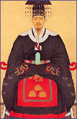
1874年甲戌（高宗十一年）二月八日生于昌德宫之观物轩。1875年乙亥册封王世子。1907年（韩光武十一年，清光绪三十三年，日明治四十年）7月20日在昌德宫仁政殿即位。改当年为隆熙元年。
纯宗即位四日后，7 月24日，在京城的日本外相林董和朝鲜统监伊藤博文将韩国总理大臣李完用唤至统监府，交给他事先拟好的七款《日韩协约》草案。李完用立即召开内阁会议，一字不动地通过了这一协约，当晚李完用在伊藤住所签字，史称《丁末七款协约》（第三次日韩协约）。协约内容是：第一、韩国政府在改善施政方面，必须接受统监的指导；第二、韩国政府制定及采取重要的行政措施，均须事先得到统监的同意；第三、韩国的司法事务，须与普通行政事务区分开；第四、韩国高等官吏的任免，须经统监同意；第五、韩国政府应任命统监所推荐的日本人为韩国官吏；第六、不经统监同意，韩国政府不得聘用外国人；第七、废除明治37年（1904年）8月22日签订的《日韩协约》第一条(即废除日本人为财政顾问制度)。该协约还附有秘密《备忘录》，其要点如下：一、除保留一个大队兵力担任皇宫守卫外，其余韩国军队全部解散；二、韩国政府应任命日本人担任各部次长（相当于副部长），内务部警务局长、内阁秘书长、各部秘书官及各道事务官等；三、韩国聘用的一切顾问，均予解聘；四、由日本人和韩国人共同组成最高法院由日本人担任院长和总检察长；3个高级法院，由5个日本人分别担任审判官、检察官和书记官，8
个地方法院，由日本人担任院长和检察长；131个区法院，审判官和书记官中各有1个日本人；五、新设9个监狱，由日本人任典狱官。7月27日，日本又迫使韩国卖国政府公布《新闻法》，7月29日，发布《保安法》，剥夺了韩国人民言论、出版、集会、结社的一切自由。3月1日，开始强行解散韩国军队。这一行动激起了第二次反日义兵斗争。从此，开始了由日本人作为次官，实际掌握中央及地方行政大权的时期。
为加速吞并韩国，日本在韩国加强了军事警察统治。统监府成立时，在韩国的日本宪兵约有800人，1907年末已增为2千多人，1907年更达到8，600多人，宪兵特务遍布韩国各地。日本过去在韩国只有1个师团的兵力，统监府成立后到1908年5月前，又增加1个旅团，两个步兵联队(团)和1个骑兵联队。对韩国人民的反抗，采取了残酷迫害和血腥镇压的措施。据统监府显然是缩小的官方统计，从1907年
7月到1908年底，就杀害了近一万五5千名反抗日本的韩国人。
1909年春，日本外相小村寿太郎令外务省政务局长仓知铁吉起草关于韩国问题的文件。仓知铁吉拟订了吞并韩国的《对韩政策的方针》和《对韩施政大纲》。3月30日，小村向首相桂太郎提交了这两份文件，桂太郎当时即交给内阁考虑。4月10日桂太郎、小村和正在东京的韩国统监伊藤3人就吞并韩国问题密谈。伊藤表示完全同意两个文件。7月6日日本内阁通过了文件，并得到天皇批准。《对韩政策的方针》即关于日韩合并的决议规定：“在适当时机断然实行韩国之合并。使合并后之韩国成为(日本)帝国版图之一部分。”《对韩施政大纲》则主要有以下内容：在合并韩国时机到来之前，须“在韩国驻扎必要之军队，并增派大批宪兵及警察”；“将韩国铁路移交日本政府的铁道院掌握”；“尽可能多地向韩国移民，以加强日本势力”；“进一步扩大在韩国中央政府及地方官厅的日本人官吏的权限”，等等。7
月12日，日本又强迫韩国政府签订“协约”。韩国政府向统监府司法厅交出司法权和监狱事务。接着又取消了韩国政府的军事部。
1909年 6月14日，伊藤博文辞去统监职务，副统监曾弥荒助升任统监。伊藤的去职，标志着朝鲜统监政治时期的结束，进入合并时期。在合并时期，主要是具体实施吞并朝鲜的方案和取得国际上帝国主义的支持。1909年10月，伊藤博文到中国东北活动，计划与俄国财政部长柯科夫措夫密谈，一则密谋进一步掠夺中国东北权益，二则事先征得沙俄对日本吞并朝鲜谅解。10月26日，朝鲜爱国志士安东根在哈尔滨车站刺死了伊藤博文。12月22日，李在明伏击了李完用，使李完用身负重伤，险些丧命。（有关安重根刺杀伊藤博文的详细经过，参见帖子《10月26日：韩国义士安重根诛杀伊藤博文九十三周年纪念》）
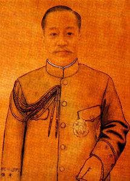 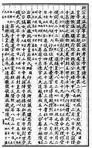
伊藤被刺大大震惊了日本帝国主义。日本政府趁机煽动复仇情绪，为吞并朝鲜制造舆论。军政首脑山县有朋、大隈重信、寺内正毅等劝说桂太郎内阁立即吞并朝鲜，有的公开发表声明、谈话，敦促政府采取果断措施。御用报刊也推波助澜。“朝鲜问题同志会”、“偕乐园”等组织纷纷出笼，四处演说，鼓吹吞并朝鲜。1910年初，在日本第26届议会上，在野党议员组织“中央俱乐部”，向首相提出质询，要求追究“推动合并不力”的现任统监曾弥荒助的责任。1910年春，曾弥荒助回东京治病，日本政府遂将其解职。5
月30日，任命陆军大将、前陆军大臣寺内正毅出任统监。6月3日，日本内阁通过了《对韩国施政方针》。按照这一方针，吞并朝鲜后，设立总督府，“总督直接隶属于天皇”，在朝鲜“有统辖一切政务之权限”，“委总督以大权，有发布有关法律事项、命令之权限”等。寺内正毅又据此拟订《合邦处理方案》，方案包括变更朝鲜国名等22项条款。
1910年 8月22日，汉城的日本军、宪、警全部出动，警戒全城，城门、要冲、大臣住宅和皇宫更是戒备森严。下午 1时，召开了御前会议，总理大臣李完用说明与统监府交涉经过，强调“韩日合邦”不可避免，并宣称全体大臣一致赞成合邦。下午4
时，李完用到统监府，提交了纯宗皇帝授予签约的委任状。李完用和寺内正毅在《日韩合并条约》上正式签字。
《日韩合并条约》共计八条，第一条规定：“朝鲜皇帝陛下将朝鲜之一切统治权，完全永久地让与日本皇帝陛下”。第二条规定，“日本皇帝陛下接受前条所举之让与，且允许将朝鲜全部合并于日本帝国”，等等。同年9月30日，日本公布朝鲜总督府官制，任命寺内正毅为第一任总督，10月1日起成立总督府。总督府在朝鲜推行了以“皇化”(奴化)为目的的“日韩一体”的同化政策，以毁灭朝鲜民族。在日本军人总督手下，对朝鲜实行军人武断统治，由宪兵司令官担任警务总长，禁止朝鲜人结社、集会，取消了言论和新闻自由。此外还颁布《朝鲜教育令》，对朝鲜进行奴化教育，强迫朝鲜人以日语为“国语”，强制各级学校用日语教学。日本对朝鲜的经济命脉也进行全面的控制。在吞并朝鲜后10年内，日本殖民者从朝鲜农民手中夺取了一半以上的土地，仅东洋拓殖会社就霸占10多万公顷的土地。朝鲜
75%的农民由于失去土地而沦为佃农、半佃农。在吞并朝鲜的头4年中，殖民者将租税提高了 4―5倍。日本殖民者还不断增加朝鲜粮食和原料的输出。从1910―1919年，按价值计算，大米输出增加了17倍，大豆增加了
3倍多，棉花增加了26倍。为巩固其殖民统治，日本政府还不断向朝鲜移民。从此，有数千年悠久历史的朝鲜，沦为日本直接统治的殖民地。李�p则被降为“昌德宫李王”，软禁在这座五百年历史的悠久宫苑中，成了自己国家土地上的异国囚徒。
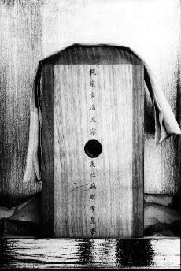
汉城宗庙正殿内的纯宗孝皇帝神位
李�p幼年因被宫女下毒暗害，所以身体受到损害，不能生子。立弟李垠为皇太弟，后改称皇太子。1926年，纯宗因病去世于昌德宫大造殿，终年五十二岁。日本朝鲜总督府为了收买人心，为其举行了隆重的国葬仪式。纯宗安葬在汉城近郊金谷的裕陵。
皇后
纯明孝皇后闵氏（籍骊兴） 1872―1904
行左赞成赠领议政忠文公闵台镐女。葬金谷裕陵。
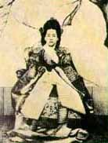
纯贞孝皇后尹氏（籍海平） 1894―1966
海丰府院君尹泽荣女。葬金谷裕陵。
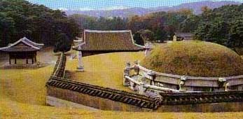
裕陵
附：朝鲜贵族令封爵名单
王公族四人：
李垠、李�铡⒗钤孛帷⒗����F
侯爵六人：
李载完、李载觉、李海昌、李海升、尹泽荣、朴泳孝
伯爵三人：
李址�F、闵泳�U、李完用
子爵二十二人：
李完�F、李�伍F、朴齐纯、高永喜、赵重应、闵丙�]、李容��、金允植、权重显、李夏荣、李根泽、宋秉��、任善准、李载昆、尹德荣、赵民熙、李秉武、李根命、闵泳奎、闵泳韶、闵泳徽、金声根
男爵四十五人：
尹用求、洪淳馨、金�]��、韩昌洙、李根湘、赵羲渊、朴齐斌、成岐运、金春熙、赵同熙、朴箕阳、金思浚、张锡柱、闵商镐、赵东润、崔锡敏、韩圭�l、�始�浚、南廷哲、李干夏、李容泰、闵泳达、闵泳绮、李钟建、李凤仪、尹雄烈、李根湖、金嘉��、郑洛�F、闵种默、李载克、李允用、李正鲁、金永哲、李容元、金宗汉、赵鼎九、金鹤��、朴容大、赵庆镐、金思辙、金炳翊、李胄荣、郑汉朝、闵炯植
懿愍文仁武庄至孝明晖皇太子 李垠
李垠（1897―1970）
大韩帝国懿愍皇太子李垠殿下，1897年出生于德寿宫。为高宗第三子（序齿则为第七，之前众子早夭）。1900年封英亲王。1907年10岁的时候，高宗被迫退位，33岁的长兄李�p即位，封他为皇太子。同年，日本朝鲜统监伊藤博文以“皇太子需要摆脱宫人影响，跟从帝师学习帝王之道”为名，将其带到日本，送入贵族学校――学习院读书。韩国人民普遍认为，年幼的皇太子是被作为人质带去的。临行前，退位的高宗嘱托他说：“太子啊，皇帝是你的同胞兄弟，你的长兄，但是从皇位来看，他同你形同父子，你们俩应该互相帮助，共同努力拯救大韩社稷啊！你去日本留学正是为了这个目的。到日本之后，无论是悲是喜，都要装在心里，不要表现在脸上。”李垠到达日本后，当时的明治天皇对他十分喜爱，亲自和皇后到皇宫的凤凰之间迎接李垠，并下令“要象服侍万事皇太子（后来的大正天皇）那样侍奉殿下”。
1909年，自称“立志将韩国改造为日本一样的现代化国家”的伊藤博文遇刺，日本军方势力在朝鲜得势，导演了1910年的日韩合并，大韩皇帝的名号被废除，降为“昌德宫李王”，李垠的封号也降为昌德宫王世子，成为日本皇族成员。明治天皇和昭宪皇太后去世后，日本对李垠的待遇立刻降低，每月“御用金”只有数十日元。
1911年9月，李垠从学习院编入中央幼年军校预科二年，1913年编入军校本科，1915年进入陆军士官学校，同其他日本青年皇族学生一同接受军事教育。1917年，李垠从日本陆军士官学校毕业。1920年进入日本陆军大学。
随着李垠年龄的增长，其婚事自然提到了议事日程上来。当时任日本首相的第一任朝鲜总督寺内正毅鉴于朝鲜几百年的势道政治、外戚干政带来的危害，极力主张从日本皇族中挑选一位公主与之结婚，并说服了天皇和元老山县有朋。1917年，他为李垠挑选了梨本宫守正王的女儿方子公主。梨本宫一家对此表示惊疑，但是还是由“这是天皇陛下的意愿”一句话被迫答应了。朝鲜方面，高宗表态说“只要王世子满意，我没有意见”，纯宗则意味深长地说“事情发展到了这一步，那是很自然的”。此事当时被作为“日鲜融合”的象征而广泛宣传。1918年12月，大正天皇批准婚约，两人第一次见面，彼此印象尚可。李垠此时接受了11年的日本教育，早已经被日本人同化了。但是，就在1919年1月21日，预备举行婚礼前四天的深夜，高宗突然去世，婚礼被迫延期。李垠回国奔丧，在高宗遗体前行了号哭三拜之礼。
高宗之死，在朝鲜掀起了轩然大波。但是李垠并没有把自己的心情流露出来。回日本之后，不顾守孝三年的朝鲜古礼，于1920年4月27日在鸟居坂御殿举行了婚礼。次年八月，长子诞生，取名为晋。1922年4月，李垠夫妇带王子晋回朝鲜，纯宗按照朝鲜王朝家礼举行了盛大的欢迎仪式。5月20日，在昌德宫举行了饯别晚宴。出席宴会的李垠夫妇回到住所时，仆人发疯似的报告说，王子入睡之前，给他喂了牛奶，后来突然中毒病危。三天后，出生八个多月的李晋夭折，安葬在朝鲜。对于王子晋之死，很多朝鲜人认为这是为了报三年之前日本人毒死高宗的仇。
李垠回日本后，先后担任旧日本陆军第59连队长、近卫第2旅团长、留守第4师团长、第51师团长、教育总监附、第1航空军附、第1航空军司令官、军事参议官等职位，军衔升至日本陆军中将。对于他在日本的生涯，一些韩国人认为是卖国的罪行，也有一部分韩国人认为，他自幼作为人质被带到日本，完全没有自由，只是这场悲剧的受害者，而且李垠还设立了韩国留日学生奖学金团体“李花会”，在韩国开设了淑明女子大学、贞明女子高校、养正高校，对韩民族文化事业有贡献。
李垠在日本的府邸，战后成为东京王子饭店的一部分
二战结束后，1945年11月29日，日本天皇裕仁召开御前会议，宣布由于盟军总司令部的命令，除了天皇的弟弟秩父宫、高松宫、三笠宫之外，其他的12家皇族成员：闲院宫、伏见宫、东伏见宫、贺阳宫、久迩宫、东久迩宫、梨本宫、朝香宫、山阶宫、北白川宫、竹田宫、昌德宫全部降为平民。李垠自此被取消日本皇族身份。他想返回韩国，但是由于国内民族主义及共和主义力量的反对，李承晚总统因政治理由拒绝其回国。李垠以在日韩国人身份进行登记。同时，在大韩民国成立之后，被视为韩奸的李王家族在韩国的财产大部被没收，在北朝鲜的王室财产更是早被没收一空。在日本的财产也因盟总对日本皇族、贵族和财阀征收巨额财产税而几乎丧失殆尽，在东京纪尾井坂的府邸也因财产税而被迫出卖（后成为东京王子饭店）。战后初期，李垠夫妇只能以蘑菇度日。1950年，其独子李玖自费去美国麻省理工学院留学，1957年毕业前夕，李垠夫妇多方凑了盘缠去美国看望儿子，在纽约郊外的公寓里生活了两年。这是李垠一生中最快乐的时光。1959年，李垠因脑血栓突然卧床不起，5月回到日本治疗，生活仍然贫苦。1961年，韩国朴正熙政权成立，出于对李垠这位韩国历史见证人的尊重，同意负担其医疗费用和生活费，并恢复李垠夫妇的大韩民国国籍。1963年，朴正熙总统以人道理由同意李垠夫妇回国。其时李垠已经68岁，因脑溢血而不省人事，处于意识不明的状态，从飞机上抬下来，回到了做人质赴日后阔别58年的祖国。之后7年间，一直居住在昌德宫乐善斋养病。此时昌德宫已经被收归国有，朴正熙特意允许其居住在乐善斋表示特别照顾。1970年5月1日，饱受病痛折磨的李垠在乐善斋去世，享年73岁。
1970年5月9日，大韩民国政府为大韩帝国最后的皇太子“懿愍皇太子英亲王李垠殿下”举行国葬仪式。日本高松宫及王妃代表日本天皇出席。运载李垠遗体的车辆自昌德宫敦化门驶出，缓缓开往金谷地区位于高宗洪陵旁边的皇太子英亲王园寝――崇仁园，葬在早夭的王子李晋身旁。沿途数十万汉城市民迎送这位命运蹉跎的大韩最后一位皇太子。人群中有许多人大声哭喊“英亲王殿下离去了！朝鲜时代终结了！”。
当日，KBS（韩国放送会社）在广播中做了如下总结：“今天，前皇太子英亲王李垠氏的国葬仪式在汉城举行。朝鲜王朝500年历史中的最后一位皇太子生平坎坷，在历经多种艰难困苦后去世，享年七十三岁。他的一生是旧皇室悲剧的象征，是孤独、忍耐、屈从的一生。如今皇太子已经将这一切恩怨荣辱置之身外，终于得以宁静地长眠在其父皇的身侧”。王妃李方子则作为未亡人居住于昌德宫乐善斋，继承李垠“一定要对韩国人民赎罪”的遗愿，在晚年设立了明晖园，对韩国的残疾儿童实行文化教育，后又创立了慈惠学校，对弱智儿童进行教育，受到韩国和日本政府的高度赞扬。李方子于1989年4月30日去世。与李垠合葬于崇仁园。日本皇室成员出席了她的葬礼。
附：
义亲王李�眨�1877―1955）
初名平吉，号晚悟。高宗第二子，生母贵人张氏。1877年生。1891年封为义和君。1894年以特派大使身份访问日本，1895年访问欧洲5国，1899年去美国留学。1900年被封为义亲王。义亲王是李王族中公认的美男子，英武果断。1910年日本吞并韩国后封为公爵，义亲王以沉湎于酒色自污而掩人耳目，暗中支持韩国光复运动。1919年李太王去世，韩国独立运动团体“大同团”奉戴义亲王为总裁，致力于韩国独立运动。大韩民国上海临时政府成立之后，义亲王准备秘密脱逃到上海，参加临时政府。但是在满洲的安东（丹东）被日本警察发现，强制送回韩国。之后一直生活在日本警察特务的严密看管之下。1930年以朝鲜贵族公爵殿下的身份被送到九州岛监视居住。义亲王支持独立运动的消息为人所知之后，韩国人民向他表示了崇高的敬意。韩国独立运动领袖金九在回国途中特地拜访义亲王，向他表示了最高的敬意。1955年，一生坚守民族节操的义亲王在韩国去世，享年78岁。韩国人民给予他很高的评价，如“朝鲜的麻衣太子”、“义血男儿”等等。义亲王有子二人，李键、李��。李键战后加入日本国籍，改名桃山虔。李��死于广岛原子弹。
――牧野鹰扬（本家友人）
|